Attorney General of British Columbia v. Council of Canadians with Disabilities
This transcript was made with automated artificial intelligence models and its accuracy has not been verified. Review the original webcast here.
Justice Rowe (00:00:01): The court.
Justice Wagner (00:00:01): Lacour.
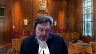
Thank you, good morning to all.
The case of Attorney General of British Columbia against Council for Canadians with Disabilities.
For the intervener, Attorney General of Canada, Christine Moore.
For the intervener, Attorney General of Ontario, Yashoda Ranganathan and David Tortel.
For the intervener, Attorney General of Saskatchewan, Sharon H. Pratchler-QC and Jeffrey Crawford.
For the intervener, Attorney General of Alberta, Lee M. McDaniel.
For the intervener, West Coast Prison Justice Society, Greg J. Allen and Noyan Camusi.
For the intervener, Empowerment Council, Systemic Advocates in Addictions and Mental Health, Sarah Rankin, Anita Zigetze, Ruby Dand and Maya Kotob.
For the intervener, Canadian Civil Liberties Association, Andrew Bernstein and Alexandra Shelley.
For the intervener, Advocacy Centre for Tenants Ontario, Arch Disability Law Centre, Canadian Environmental Law Association, Chinese and Southeast Asian Legal Clinic, HIV and AIDS Legal Clinic Ontario and South Asian Legal Clinic Ontario, Roberto Lattanzio and Gabriel Reznick.
For the intervener, David Asper Center for Constitutional Rights, Cheryl Milne.
For the intervener, Eco-Justice Canada Society, Danielle Chetter and Margot Vinton.
For the intervener, the Trial Lawyers Association of British Columbia, Aubin Calvert.
For the intervener, National Council of Canadian Muslims, Sameha Omer, Omer, I’m sorry.
For the intervener, Mental Health Legal Committee, Karen R. Specter, Kelly Bryan and C. Tess Sheldon.
For the intervener, British Columbia Civil Liberties Association, Ellen Pongerchick Spire.
For the intervener, Canadian Association of Refugee Lawyers, Anthony Navanilan and Nassim Mituwani.
For the intervener, Jason Arman and Tim Dixon.
For West Coast Legal Education and Action Fund.
For the intervener, Center for Free Expression, Faisal Baba and Madison Perlman.
For the intervener, Federation of Asian Canadian Lawyers and Canadian Muslim Lawyers Association, Fahad Sidiqui.
For the intervener, John Howard Society of Canada and Queen’s Prison Law Clinic, Alison M. Latimer QC.
For the intervener, Animal Justice, Caitlin Mitchell and Scott Tinney.
For the intervener, Canadian Mental Health Association National Canada Without Poverty, Aboriginal Council of Winnipeg Inc. and End Homelessness Winnipeg Inc., Joelle Pastorasala, Alison Fenske.
For the intervener, Canadian Constitutional Foundation, Mark Scheeley and Lipi Mishra.
Ms. Moore.
Speaker 1 (00:03:57): Good morning Justices.
The Attorney General of Canada intervenes in this appeal in support of maintaining the existing test for public interest standing established by the court in downtown Eastside sex workers in Canada.
Canada takes no position on the merits of the appeal or on whether CCD should be granted standing.
Canada is however concerned that the modification to the test in the BC Court of Appeals decision would undermine the balance struck by the court between the goals of public interest standing in ensuring legislation and state action are not immunized from review and the traditional rationales for restricting standing.
And the risk of upsetting this balance is that it could lead to courts allowing abstract and hypothetical claims that are not suitable for determination to proceed.
In my time I propose to focus on two points.
First, why a concrete factual matrix is so essential to the proper adjudication of constitutional claims and specifically charter claims.
And second, why its absence presents a risk to the separation of powers.
So my first point, why a concrete factual matrix is so essential to the proper adjudication of constitutional claims.
We’ve known since McKay that the importance of the issues involved and the impact that such decisions have in future require that courts avoid adjudicating constitutional claims on an abstract and speculative record.
Charter issues in particular are best decided when a court’s presented with a sufficiently concrete and well-developed factual setting.
This court in Danson affirmed this basic proposition and tells us that it will be the exceptionally rare case when adjudicated facts are not required and legislative fact alone will suffice.
And the example that Justice Betts gave in Metropolitan Stores was legislation that imposed the state religion.
Most cases are not like this.
Often it’s not even clear if it’s the direct impact of the law or the application of the law in practice that is at issue, and sometimes it’s both.
There was a lot of discussion yesterday about the necessity of an individual plaintiff joining with a public interest applicant or whether a witness would suffice.
In our submission, as the court held in Downtown Eastside, it’s preferable to have a directly affected individual acting as a plaintiff with an organization that is not an organization that’s granted public interest standing.
But it’s not essential.
It will require an assessment on a case-by-case basis.
We do say that in save in the most exceptional circumstances, there needs to be a pleading with material facts about the experiences of directly affected individuals.
And so ideally, an applicant for standing will be able to demonstrate that these individuals will act as witnesses, or if they won’t, that there is otherwise a suitable way to prove the facts about their circumstances.
So a party seeking standing in our submission has to provide a sufficiently particularized pleading that will enable a concrete factual basis for the adjudication of the constitutional issues raised, the who, what, when, where.
And they must also, at the third branch of the test, provide some minimal level of evidence to explain that they’ll be in a position to bring forward the evidence and the record to make out those pleadings of material fact.
If the rights holders on whose behalf the organization seeks to represent are not participants in the litigation, either as plaintiffs or as directly affected witnesses, courts and other parties won’t have the ability to understand the realities of a given situation, which is often, almost always, required in order to weigh and balance the impacts of the law or the state action on various stakeholders.
In our brief, we pointed to a number of decisions which demonstrate just how important the adjudicative facts can be in assessing the constitutionality of legislation.
And in charter cases in particular, we know from the jurisprudence that adjudicative facts do play a key role at all stages of the analysis, at breach, justification, and remedy.
And so in a section 15 case, for example, Whistler tells us that the analysis requires us to look at the circumstances of the members of the group and the negative impact of the law on them.
And similarly, in Fraser, the court cautions us that evidence about a claimant group’s claimant group situation on its own may amount to merely a web of instinct if it’s too far removed from the situation in the actual workplace, community, or institution that’s subject to the discrimination claim.
Evidence of statistical disparity on its own may have significant shortcomings that leave open the possibility of unreliable results.
And the court says the weakness of each type of evidence can be overcome if both are present.
That was that paragraph 60 of Fraser.
And that’s caution is and should inform courts as they’re applying the standing test.
We’ve also, I won’t take you through them, but we’ve pointed the court to Gosselin, Hutterian Brethren, and other cases which demonstrate why we need adjudicative facts about directly affected litigants to be brought forward, both to be pled and to be brought forward through evidence.
And I’ll just say with respect to section one, the court has to consider in those cases, in the final balancing, if there’s proportionality between the deleterious and salutary effects of the law.
And that necessarily requires an understanding of the impacts on individual’s right holders.
So, there’s more, there’s more, yes.
Justice Kasirer (00:11:00): Sorry to interrupt, but you’re making a strong case, but do you draw a distinction, you say pled or brought forward?
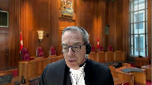
Do you draw a distinction about the relevance of this, these adjudicative facts and the balance that you see as essential at the pre-discovery stage?
Speaker 1 (00:11:23): Yes, I would say that a party, whether it’s a directly affected party or a public interest litigant, they have to plead the material facts and they can’t plead.

The concern is a speculative claim, a claim that’s pled at too general a level that a defendant doesn’t know the case it has to meet.
And so under the standing test we need both a pleading that can meet the justiciable requirement and at the third branch of the test the court has to look at whether the issue will be presented in a sufficiently concrete and well-developed factual setting.
And I’ll just note in terms of justiciability, in fact the McKay-Danzen test is incorporated somewhat into that analysis as we learned from this court in Highwood Congregation at paragraph 34.
So it is a relevant factor, the material facts do need to be pled and I guess in terms of identifying where the line is drawn, it might not be easy in all cases, but I suppose you can have an, you know, if I could give an example, if we had a pleading that says the legislation can cause X and that X can cause harm, that’s not a concrete list.
We need a concrete list we need an allegation that the legislation’s effects do limit rights and that those limits are not justifiable.
Justice Karakatsanis (00:13:12): So can I ask you Ms. Moore, because accepting everything you say about the importance of having a proper factual foundation for deciding charter cases, will it not sometimes be the case that in a public interest litigant is able to bring forward the diverse range of lived experiences that a particular individual might not?
So my question to you is, doesn’t Downtown Eastside really say that you have to look at all of these factors, all of the circumstances and decide whether this is an appropriate way to bring forward this important public interest issue?
Speaker 1 (00:13:55): Absolutely, and I would agree that often cases and records before the court, brought by public interest litigants, that can be often a better way to adjudicate these cases.
But if we look at the jurisprudence and we look at those cases like Downtown Eastside and Carter, they all had a directly affected one or more individual before the court or their evidence.
And without that, the court is deprived of what they need.
And I’ll just add, I know
I see I’m out of time, but my last point that I wanted to make is that we need to ensure that the test continues to allow courts to guard against being drawn into providing a legal opinion.
And we know these cases are very resource intensive.
And so that’s why the determination at an early stage that there will be a proper factual record that will not bring the court outside its proper role is so essential.
That is how we will achieve and increase access to justice.
Thank you very much.
Thank you.
Justice Wagner (00:15:12): Thank you.
Speaker 2 (00:15:17): Good morning Chief Justice, Justices.
I want to address how the public interest litigant can demonstrate that it will provide a sufficiently concrete factual setting for the proceeding and why it should be prepared to do so at an early stage.
With respect to how and what is sufficient, it’s going to depend on the facts but it has to be more we say than just a bald assertion that there will be concrete evidence provided at a later date.
Certainly the public interest litigant doesn’t have to put forward the evidence that they’re going to bring to prove the Charter claim but it has to be specific and it has to give notice of the specific instances of alleged harm arising from the impugned legislation.
So it has to bring the adjudicative facts of who is impacted and how.
Why is that necessary at an early stage?
It’s part of the public interest litigants onus, it’s a duck that the public interest litigant needs to get in a row and the reason it’s part of that onus is that the sufficiency of the fact is necessary to the court determining whether the proceeding is a reasonable and effective means of bringing the matter before the court and it’s also central to the purposes that underlie standing law that are outlined by this court at paragraphs 25 to 30 of Downtown Eastside.
The proper judicial role, the proper allocation of judicial resources, the presentation of contending points of view and let me talk for a minute about why the sufficiency of the adjudicative facts and notice of the adjudicative facts is necessary to each of those purposes.
The proper role of the court, the legitimacy of the court proceeding depends on there being real-life facts that are the basis for the adjudication.
Without demonstration that there is a real-life situation that requires adjudication by the court, the question arises as to whether the court is intruding into the legislative branch and as you put it yesterday Justice Roe, whether the court is being used as a substitute for the classroom and this concern goes all the way back to Borowski.
Some of the interveners say constitutional cases are typically decided predominantly on social and legislative facts so why are we requiring the public interest litigant to bring the adjudicative facts?
The answer to that question is that if you have a decision that’s based just on social and legislative facts, that’s a policy decision.
That is not the proper role of the court.
So even where the courts rely heavily on the social and legislative facts, it is the adjudicative facts that tell the court that there is a live issue for adjudication.
Justice Jamal (00:18:03): Jonathan, wouldn’t you agree that standing is a discretionary matter and that even public interest standing is a discretionary matter applying the test?
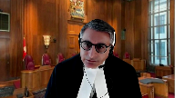
And while the sorts of facts at an early stage that you’ve pointed to, may be useful, they may be sufficient.
The question is, are they necessary?
And it seems to me that that evaluation has to be made in the concrete setting of a particular case looking at the evolution of the case, the all the circumstances, the way the case has started, where it is.
But to say that there’s a rule that you need facts at an early stage, seems to me to go beyond what Downtown Eastside has said.
Because I hear from both you and Canada that you’re applying, you’re asking for us to maintain Downtown Eastside, and yet you’re asking for a gloss that seems to go beyond it.
Speaker 2 (00:18:53): Thank you, Justice Jamal.
I think that this is consistent with Downtown Eastside and I’m not saying that the public interest litigant needs to bring the facts that will ultimately form the basis of the adjudication of the charter issue.
But at the stage, the early stage when standing is challenged, the respondent needs to know the case to be met.
And so there needs to be sufficient notice of the adjudicative context.
It’s also what gives the court comfort that it is entering into a question that is proper for the court’s adjudication.
And so turning to the need for a proper adversarial context, without the adjudicative facts that tell you who is allegedly impacted and how, it’s difficult for the respondent to know what they’re responding to.
And in paragraph 15 of Ontario’s factum…
Justice Brown (00:19:43): But standing isn’t an issue of natural justice.
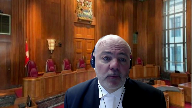
It wasn’t described in that way in Downtown Eastside.
The aspect of standing that we’re talking about is ensuring that, assuring the court that this issue will be litigated in a sufficiently concrete sort of factual setting.
I can’t remember the exact words, but that’s the consideration that forms part of the third factor under Downtown Eastside.
But I’ve never understood it as a giving notice to the other side about the case to be met.
Speaker 2 (00:20:16): Well in terms of understanding what that sufficiency of the concrete factual setting is at the early stage, what we’re saying is that even if the public interest litigant isn’t bringing the actual evidence that they will rely on to establish the charter breach, at least the evidence should give notice to the other side of what the facts of the case are going to be.
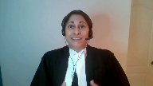
And this is really nothing new. It’s
Justice Rowe (00:20:43): I mean, forgive me for interrupting, but perhaps it’s the difference between an adversarial process where there’s something to adjudicate, and a seminar.
Speaker 2 (00:20:55): Yes, exactly.
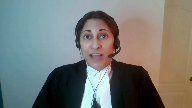
So the three purposes of standing law are met by having that notice that there is going to be a proper context for adjudication including real-life facts and it also serves the purpose of allowing the respondent to know how it can respond to the case and that is information that we say the respondent needs to know at an early stage in order to develop its case in order to properly test the facts that are alleged and why should the court be concerned with whether the respondent has what it needs to do that?
Well, it’s the risk of the court getting it wrong is going to be increased if the adversarial context and the adversarial process isn’t protected.
And this is nothing new.
Requiring adjudicative facts at an early stage is no different than what is expected of any other charter litigant and that the case of Danson is a great illustration of this.
Danson was the case that came up to this court on a motion to quash an application so it was a preliminary motion.
It was a challenge to the Ontario rules of court by a lawyer who said that the the rules that allowed for assessment of costs against solicitors personally affected the independence of the bar and the applicant said we don’t need any facts to adjudicate this.
There are no facts in dispute and justice Finlayson in the court of appeal said well the position of the attorney general makes it clear that there are facts in the dispute and of course the attorney general disputed the alleged impact of the legislation and this court upheld the court of appeal for Ontario’s decision finding that constitutional challenges based on the alleged impact of a law need adjudicate effects.
Actual instances of harm arising from the application of the legislation and the attorney general of British Columbia has quoted a helpful passage from the court from the court of appeal decision in Danson at paragraph 66 of its factum where justice Finlayson says the courts should be reluctant to set up technical roadblocks but it’s not unreasonable to insist on the crystallization of the issue on the part of the applicant so that the attorney general of the province can respond to them and the court can understand them so that’s what we’re getting at the crystallization of the issues at an early stage and that involves the public interest litigant demonstrating that it will be in a position to bring real life facts to bear facts through which the allegations can be tested and the legal issues can be analyzed Miss Miss Rana and Fang can I can I
Justice Kasirer (00:23:48): ask, that’s since 1990, and one of the lessons of Downtown Eastside, one of its virtues, to my mind anyway, is the balance that it proposes.
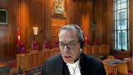
You cited earlier paragraphs 25 to 30.
That was Justice Cromwell’s account of the traditional approach.
His message in the case is we must balance.
Overlapping speakers (00:24:13): And
Justice Kasirer (00:24:13): these matters and in specific regard of the third criteria, how it must be applied flexibly.
How does that, if this is our case today is a problem of the proper application of downtown, how does that flexibility find expression?
Speaker 2 (00:24:32): Absolutely, and I agree with you, Justice Kasirah, that in certain cases having a public interest litigant can be very beneficial, it can avoid a multiplicity of individual challenges, and where that happens, it is precisely because the public interest litigant is able to bring a comprehensive record to bear.
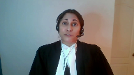
So at the stage of assessing whether standing should be granted, we are saying that the court should make sure that the public interest litigant will be in a position to do that and that they have a burden to meet to demonstrate that they will.
And of course the concern is that if the court isn’t fully informed, if there’s not a proper adversarial context, that those who are more directly impacted may be prejudiced by an ill-considered decision that doesn’t consider all the impacts.
Justice Wagner (00:25:26): Thank you very much.
Ms. Pratchler?
Speaker 3 (00:25:32): Good morning.
Saskatchewan has set out in our condensed book, three key principles which summarize our position.
One, public interest standing should be proven not presumed.
Two, alignment of interest is a key touchstone to assess claims of public interest standing.
And in our submission, many of the questions which the court asked yesterday can be answered by considering that criteria or factor of alignment of interest and it also responds to the question that Justice Kasir asked this morning, how does the flexibility expressed in Downtown Eastside find expression?
In Saskatchewan’s submission, it can be found through a consideration of the evidence of alignment of interest.
The third principle which we set out in our condensed book is that public interest standing should not be converted into a private reference power.
In Saskatchewan’s submission, is the intention, let’s start with is the intention to call evidence sufficient?
In Saskatchewan’s submission, an intention is not sufficient for a number of reasons.
Firstly, there is the nature of the rights at issue.
We are dealing with individual personal rights.
Individual rights should be exercised by the individual unless there is a good reason for someone else to do so.
Indicating an intention to establish that reason isn’t enough.
Secondly, the assumption of competence to bring civil litigation.
That’s the default setting unless evidence establishes an incapacity.
We have a well established test for the appointment of litigation guardians in civil litigation.
If there is incapacity, why should it be acceptable in the context of public interest standing to presume incapacity with a vague promise of providing evidence in the future to support the need for public interest standing on behalf of rights holders?
Thirdly, an intention to call evidence a trial was how the decision on public interest standing was deferred in good spirit.
Our case from Saskatchewan on education funding.
There were assurances that evidence would be provided at trial to establish standing, but that it couldn’t be done earlier because it was so intricately interwoven with the evidence of the breach.
In addition, there was the specter that this was such an important case that it had to be dealt with somehow.
So public interest standing and the criteria and threshold shouldn’t be an impediment.
Unfortunately, what that all amounted to was a deferral of the decision on public interest standing until the end of trial.
And two implications arise from that.
There was a presumptive grant of standing.
And after 51 days of trial, it was highly unlikely that the trial judge would do anything other than find that there was public interest standing.
Otherwise, why did we spend 51 days considering the case?
So it is of no comfort to Saskatchewan to hear an assurance that evidence will be provided at trial.
An intention to call evidence a trial is not evidence, nor is it something that is capable of being assessed through particulars for discovery.
Justice Roe noted, it seems to me all you’ve said is that there is an affidavit of lawyer and evidence will be forthcoming.
In Saskatchewan submission, if that’s all that said, that really doesn’t allow us as defendants to do much with particulars in relation to public interest standing.
The test for public interest standing has to do some work.
If it can be satisfied simply by noting an intention to call evidence, how is that any kind of screening mechanism?
What work is the test actually doing in that instance?
In response to Justice Casir’s question yesterday, is there a difference if we’re dealing with a marginalized or vulnerable group?
Saskatchewan’s response is that there has to be great care taken not to assume incompetence for members of a marginalized or vulnerable group.
As well, there has to be great care taken to ensure that members of that group can exercise agency and make their own autonomous decisions.
So it’s not definitely a lesser standard that needs to be employed.
Of interest, this point is demonstrated in the affidavit of Ms. Bernard, which has been referred to repeatedly in the hearing.
At paragraphs 36 and 37 of that affidavit, Ms. Bernard emphasizes the need to promote autonomy and self-determination of people with disabilities.
Even if an individual is assessed as incapable of making a decision, their values, preferences, beliefs, or wishes should be promoted through substituted or supported decision-making mechanisms, which are described as family members or friends.
But there’s no indication or evidence as to why that principle of autonomy should not equally apply to litigation decisions in terms of who is given public interest standing.
This naturally leads to the quality of the evidence questions that Justice Karykatsanis and Justice Jamal referred to in terms of the questions they asked.
It’s not a question in Saskatchewan’s submission of whether someone can express an opinion, but whether that opinion or view reflects those of the rights holders in terms of the infringement in the legislation, and also in terms of the scope or nature of the remedy that is sought.
Perhaps there are elements in the legislation that actually work to the benefit of the rights holders that they want to preserve.
In the case of Good Spirit, the minority-based school rights holders wanted to continue funding to all religious schools, including separate schools.
They didn’t want the fact of funding to change.
They wanted the level to go up.
However, the public school that actually grabbed the flag of public interest standing wanted the fact of funding to change for religious schools.
They wanted the amount to go down and to be redistributed to the public system.
If there is a diversity of views or range of preferences, that too should be part of the constitutional analysis.
The respondent mentioned the difficulty of having different views by clients.
That diversity of views may be critical to the constitutional analysis.
Why is there a diversity?
On what issue?
And ultimately, how should the court take that diversity of views into account?
But fundamental to that is understanding what those individual rights holders views are through their lens or perspective, not as filtered through the organization’s perspective, but as presented by the individual rights holder or by the person who is closest to know their views and preferences.
On the timing question, a series of questions were asked about timing.
Saskatchewan’s response to that is that issues of capacity to bring an action or sue should generally be dealt with at an early stage.
For example, again, I return to the rule in terms of litigation guardians.
You’re not generally allowed to bring a civil action if there’s an incapacity unless you establish a test to meet a litigation guardian.
And that’s a well defined test, which includes asking questions about why closer family members are not bringing the litigation.
So why should there not be a preliminary determination of public interest standing at an early stage, particularly if part of the reason for claiming public interest standing is the suggestion of incapacity to sue.
Saskatchewan submits there’s a qualitative difference between issues of standing or capacity to bring the lawsuit.
And I use that change in two senses there, and the contents of a claim itself.
Related to this was the suggestion that Justice Moldaver made that, well, if the evidence doesn’t pan out through discovery, then you apply to straight.
In good spirit, there were four separate attempts, including an application for an interlocutory appeal to have the issue of public interest standing resolved before trial.
Our traditional litigation tools don’t work so well when we’re applying them to abstract claims as opposed to claims of individuals.
Despite all those attempts in good spirit, the action continued all the way to the Court of Appeal, where it was finally found after a 51 day trial and $4 million of public education grant funding and an appeal that the plaintiff had no public interest standing.
In response to Justice Casir’s question, how does the circumstances of this case, but more generally, compared to that of Downtown Eastside, qualitatively, Saskatchewan would say the difference is that Downtown Eastside demonstrated an alignment of interest very specifically.
On the access to justice questions that Justice Casir and the Chief Justice asked, Saskatchewan notes that in order to assess the questions of the impact on access to justice, the Court would be greatly assisted by having evidence with which to work.
Closely related to the access to justice question is the alignment of interest question.
Unless there is alignment of interest with the rights holder, how is access to justice improved?
Seizing the banner from the rights holder doesn’t improve their access to justice unless that is something that the rights holder wants.
Whether the rights holder wants the action advanced, how they want it advanced, and what lens or perspective they want it presented from are all important aspects of litigation autonomy.
And whether there is agency or decision making by rights holders are surely all part of the public interest standing assessment.
In conclusion, there were two comments by Justice Rowan Brown that Saskatchewan wishes to reference.
At the very beginning of the hearing, Justice Rowan referred to the union of interest as part of the test from Downtown Eastside for public interest standing.
Saskatchewan acknowledges that reference and would use it interchangeably with our description of an alignment of interest.
Justice Brown referenced the difficulty he was having with the concept of forthcoming evidence and noted that if it’s a duck you need to get in a row, then go get that duck.
Saskatchewan would add this.
Maybe that duck doesn’t want to get into the row.
And unless there is actual evidence called about the alignment of interest from the perspective of rights holders, it’s very difficult to assess why that duck is not in the row.
Justice Wagner (00:35:54): Thank you very much.
Thank you, Miss McDaniel.
Speaker 4 (00:35:58): Thank you and good morning.
The Attorney General of Alberta intervenes in this appeal to make one central argument and that is that a litigant seeking public interest standing must show that their claim is brought on the basis of a sufficiently concrete adjudicative factual context.
What may be considered sufficiently concrete is discretionary and flexible and will vary with the context but abstract and hypothetical facts should not be sufficient and therefore cannot ground public interest standing.
I intend to make three points today on why hypothetical facts cannot ground public interest standing.
The first is that hypotheticals cannot substitute for concrete facts and particularly I’ll explain how just because hypothetical assessments sometimes take place in concrete cases does not mean that hypotheticals can ground standing.
The second is to outline how allowing hypotheticals to function as a substitute for standing would effectively permit cases akin to private references.
And the third is to discuss some practical concerns that arise in attempting to litigate fully hypothetical claims.
To demonstrate how such claims are ill-suited to the common law method and inconsistent with the role of courts.
And to ground this discussion I need to be clear about what we mean when we say hypothetical and abstract.
What are the characteristics of a hypothetical or an abstract claim?
Simply put, it’s an allegation that’s not grounded in a specific live concrete factual setting.
Or rests upon some assumption about hypothetical facts.
It’s an allegation about how legislation may or could be interpreted or applied rather than how specifically it actually affects any particular person or group.
Now the importance of concrete facts no doubt applies in all cases, not just public interest standing cases.
But the issue is particularly acute in the public interest standing context because the party seeking to bring the claim by very definition is not claiming their own rights.
They are claiming the rights of others.
So the link between the claimant and the live dispute is already more tenuous.
And this is why Alberta says it’s so important to guard against public interest standing cases becoming a kind of opening for hypothetical claims.
This case provides an opportunity for this court to confirm the importance of a sufficiently concrete factual setting as part of the public interest standing inquiry.
So turning to my first point, permitting public interest standing on the basis of a pleading of hypothetical facts is unsupported by legal principle and particularly the principle that constitutional cases require facts, adjudicative facts.
This court was alive to this requirement in Downtown Eastside and so the Downtown Eastside test already provides all the tools necessary to ensure the presence of a concrete of concrete facts through its requirement for a sufficiently concrete factual matrix in turn to ensure a full and complete adversarial setting.
Hypothetical facts are the antithesis of a concrete factual setting.
And as others have pointed out this is not merely a question of evidence, it’s a question of pleadings, a question of the very nature of the claim itself.
Now there’s no question
Justice Brown (00:39:58): Is it really a question of pleadings though?
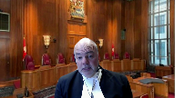
I mean, the requirement is that, and actually it’s a consideration under the third factor of Downtown Eastside, is whether the issue will be presented in a sufficiently concrete and well-developed factual setting.
Now that may require pleadings, but I could imagine, for example, where pleadings are quite general, but then there are will say statements, for example, provided, so I’m not sure if pleadings are a necessary reference point.
Speaker 4 (00:40:40): The test is always discretionary and flexible and what the pleadings do is frame the remainder of the litigation.
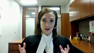
They indicate the nature of the claim, the very essence of the claim that’s brought and whether those pleadings are sufficiently concrete may very well vary in the circumstances and will say statements or other information about the way in which a public interest litigant demonstrates.
Justice Brown (00:41:07): But again, I don’t, Ms. McDaniel, and it may be that I’m just being pedantic, but the point from Downtown Eastside is not that the pleadings are sufficiently concrete, it’s that the legal issue is presented in a sufficiently concrete, the issue is presented in a sufficiently concrete and well-developed factual setting.
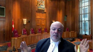
I mean, it may be that, as you say, it’s contextual, but I don’t think it’s hard to imagine where kind of very generic pleadings, which on their own may not be enough, in fact, on their own they may not be helpful at all, are supplemented by witness statements or things like that, which satisfy the court, which is the issue, satisfy the court that the issue will be so present.
Speaker 4 (00:41:57): we absolutely agree that the core issue is satisfying the court whether the issue will be presented.
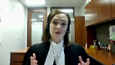
What the pleadings do is a starting point for that analysis.
It’s starting the framing and the key question is do we have sufficient adversarial context, adjudicated facts that can be tested through the adversarial method.
Justice Jamal (00:42:17): Can I test what you said though about the hypothetical and abstract facts not grounding standing claims?

I don’t want to ask you about this specific legislation, but suppose the legislation said a person can be given an involuntary lobotomy at the discretion of a doctor.
Why do you need somebody who’s been lobotomized in order to have public interest standing to challenge that legislation?
Why do you need concrete facts, actual facts, an actual plaintiff to challenge something like that?
Speaker 4 (00:42:50): I have two points in response.
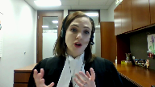
The first is, of course, the court always retains a discretion to hear a case where legislation is unconstitutional on its face.
This is Justice Betz’s hypothetical in the Metropolitan Stores case.
So that’s an initial caveat to this point.
But when we’re talking about impacts, when we’re talking about effects, something perhaps less dramatic than the involuntary lobotomy, the necessity is to show real concreteness, to show that there is actually a lease between the parties, that something is actually happening.
And so while we always retain the discretion to say this legislation on its face in any circumstance is unconstitutional, that’s not the typical case.
That’s the very rare case.
And in any case where we’re talking about individual effects, individual impacts, requires this level of concreteness, because otherwise you do have what’s effectively a hypothetical question.
Hypothetical question.
That’s effectively a private reference.
It’s a party coming to the court.
Justice Rowe (00:44:00): I’m wondering if it’s like the difference between reading a law review article and reading a decision, sets of reasons for decision.
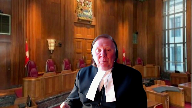
When I read law review articles, they’re very abstract and the sources of authority are other law review articles.
So it’s an abstraction on an abstraction on an abstraction.
When I pick up a case report, you’ve got a dispute which is specific and has to be resolved by the judge by the rendering of an order.
And to the extent that the court wanders into the seminar mode in some hypothetical way, I question whether we have the capacity and whether it’s our proper function.
Speaker 4 (00:44:50): We absolutely share that concern and because in one way what’s being described by Mr Justice Roe we would suggest is a private reference.
That’s a case that poses a hypothetical or a premature or an unripe question for dispute brought by a private individual and then this court has repeatedly confirmed that there is not nor should there be any ability to for private individuals to pose hypothetical questions to the court.
Justice Kasirer (00:45:16): Ms. McDaniel, can I take Justice Roe’s point.
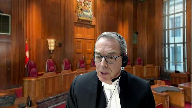
I’d like to combine Justice Brown’s question about pleadings and Justice Jamal’s comment.
And if the pleadings are themselves sufficiently specific to say that—
Justice Kasirer (00:45:35): within the knowledge of the public interest litigant, the act is administered in a way that violates rights.

Is that sufficiently specific so as to transcend this abstract hypothetical problem that you’re concerned with?
We’re not in the Betts, Justice Betts’s circumstance.
We’re not in the law review circumstance either.
We have something specific and concrete in the pleadings.
Is that enough?
Speaker 4 (00:46:08): Now I see my time has come to a close, so I’ll ask for an indulgence to add.
Overlapping speakers (00:46:12): Yes, please. Question.
Go ahead.
Speaker 4 (00:46:13): The question of whether the pleadings are sufficiently concrete is always going to be contextual, but if there is specificity, if there is something that can be tested through the adversarial process, an adjudicative factual matrix that will be sufficient to meet this test, all else being equal in the public interest standing inquiry.
Justice Wagner (00:46:36): Thank you.
Mr. Allen.
Speaker 5 (00:46:38): Chief Justice, Justices, the entry point for the West Coast Prison Justice Society submissions in this case is a comment made by Justice Carrot-Katsanis to my friend Mr. Whitten yesterday, namely that in circumstances where a plaintiff faces particular barriers to putting forward his or her case, it may be necessary to take a broader approach to standing to ensure that sufficient adjudicative facts are put before the court to allow a meaningful determination of the Charter issues.
Overlapping speakers (00:47:11): I’m not sure I went that far.
Speaker 5 (00:47:13): It may be an aggressive paraphrase and I apologize for that, but my submissions will be focused on addressing that point as it relates to the particular circumstances of Canadian prisoners.
Like many of the equity seeking groups that you’ll hear from today, Canadian prisoners face a daunting array of barriers to access to justice, which make it extremely difficult to launch and maintain a complex constitutional challenge.
And if challenges are brought, make it difficult for individual litigants to present a proper and complete record before the court.
As set out in my factum, throughout the history of the common law, prisoners have faced formal restrictions on their civil rights, such as the doctrine of civil death and the hands off doctrine.
These formal restrictions have been removed as recently as this court’s decision in Martineau in 1980, but Canadian prisoners still face a number of practical barriers to their ability to access justice.
In AIC Limited in Fisher, this court per Mr. Justice Cromwell set out a list of procedural and substantive barriers that can limit a litigants ability to meaningfully access justice.
And I say it’s remarkable how many of those factors are opposite to the circumstances of Canadian prisoners, and I’ll review some of them in my submissions.
First, Mr. Justice Cromwell cites limited economic means.
Prisoners typically have extremely limited economic means.
They’re paid a pittance for their labor in prison, a portion of their wages are deducted for necessity such as telephone usage.
With their remaining funds they’re charged exorbitant prices for things that we would take for granted like clothing and supplemental food.
Prisoners typically lack the financial resources to retain counsel.
While legal aid is available, access to legal aid services can be difficult.
And here I’ll just note parenthetically that to the extent that the reputation and experience of plaintiffs counsel or the firm at which plaintiffs counsel practices is relevant to the test for public interest standing, and I say it should not be.
Prisoners do not typically receive legal services from high powered resource rich law firms.
In Fisher, Mr. Justice Cromwell also speaks of alienation from the legal system.
And this court in the Queen and Byrd expressed concern with the ability of prisoners to engage with the legal system in a timely and accessible manner.
Prisoners faced institutional restrictions on their ability to speak with counsel.
When they do speak with counsel over the phone, their phone calls are often monitored by correctional officers.
They face Byzantine grievance and judicial review procedures.
And they also face a unique risk given that the temporal nature of being incarcerated, of their claims being rendered moot by their release or a change in their status.
Given the financial status of most prisoners, they also face a risk of being vulnerable to settlement offers designed to stifle meritorious claims.
Mr. Justice Cromwell speaks of frail emotional and physical states for litigants.
Prisoners are much more likely than the general population to experience significant mental health challenges, whether predating their incarceration or arising out of the circumstances of their incarceration.
And correctional facilities are by and large poorly equipped to provide mental health services to prisoners.
Mr. Justice Cromwell speaks of fear of reprisals.
Prisoners face serious risk of reprisals if they face grievances, which could take the form of a restriction of privileges, harassment, physical assault, interference with correspondence, and interference with visits.
And these barriers are even more difficult for prisoners with disabilities to overcome, and even more difficult for prisoners who are in isolation to overcome.
And so by operation of these factors, whether alone or in combination, most prisoners are functionally unable to launch and maintain an effective constitutional challenge.
And this raises two concerns.
One, there are meritorious challenges which are simply never brought.
And two, when challenges are brought by individual prisoners, they may lack the necessary record of adjudicative facts to allow for a proper determination of the Charter issues.
And in my submission, both of these concerns are ameliorated by a robust and propulsive approach to public interest standing, which places access to justice for equity seeking groups at the center of the analytical framework.
Thank you very much.
Justice Wagner (00:51:42): Ms. Renken.
Speaker 6 (00:51:47): Chief Justice, Justices, I appear for the Empowerment Council, Systemic Advocates for Persons with Addictions and Mental Health Issues.
All of the EC’s members, staff and clients self-identify as people who have used mental health and addiction services, and many have been involuntarily detained and forcibly medicated in psychiatric hospitals.
We are here to provide the perspective of the affected population on the issue of how the public interest standing test is calibrated.
Specifically, we are here to highlight for the Court what the concrete reality of denying public interest standing means for affected individuals and the role that reality plays in the test.
What is the concrete reality our clients face?
The EC answers this question by making two points.
One, our clients face such significant structural barriers to access to justice that they cannot begin or sustain constitutional litigation.
Two, these structural barriers do more than deprive our clients of access to a decision-maker.
They expose our clients to significant, ongoing harms in the meantime.
On the first point, we say the public interest standing test must consider access to justice in a practical way.
Our factum identifies predictable barriers to beginning litigation, both the trial and appellate decisions in JH and Alberta set out the procedural, material, and personal barriers to seeking remedies that involuntarily detained patients in hospital face.
As in JH, involuntary psychiatric patients may not have access to a telephone, let alone an advocate or a lawyer.
They may be in seclusion, physical or chemical restraints, sedated or forcibly medicated.
All of these things affect someone’s ability to act.
Even if a person can commence litigation, there are predictable barriers to sustaining it for our clients.
These include making public sensitive psychiatric records, the trauma of having to recount over and over again what happened to you in the hospital, and being tethered to years of litigation, all of which has a stigmatizing impact.
My friend said yesterday it may be inconvenient for a party seeking public interest standing to identify individual plaintiffs.
The EC wants to stress that the concern is not inconvenience to the proposed public interest litigant.
Our concern is for that individual plaintiff.
For them, participating in this litigation is not an inconvenience.
For our clients, participating in this kind of litigation is traumatizing and stigmatizing.
Justice Jamal (00:54:40): What do you say about the alignment of interests concern?
Speaker 6 (00:54:46): I would say two things in response to that concern.
The first is I would be, I think it’s a relevant consideration and courts have demonstrated the ability to consider the question of whether or not the remedy sought, the issue at stake advances the autonomy of the affected group and the, I think one of the relevant questions is whether or not that would be the effect of the remedy.
If a remedy enhances a group’s ability to advance their own interests, to identify their own interests, to speak on their own behalf, then I think a court ought to be less concerned than if the sought outcome has the impact of reducing that for the affected group.
On the second point, I think that’s all I’d say in response.
On my second point, we say the public interest standing test must consider the consequences of no litigation if standing is denied.
Yes, structural barriers to access to justice our clients face prevent them from getting before a decision maker, but that is not the worst part.
The worst part is that in the meantime they experienced ongoing and unaddressed violations of their rights.
When a government insists on an individual plaintiff, this sounds innocuous, but where do individual facts come from?
Individual facts do not arise in an abstract vacuum.
The reality is these facts are generated by our clients trauma.
Denying public interest standing to the elusive individual litigant means that while we are waiting, thousands of individuals are generating facts.
Our clients, by the way, cannot lend their adjudicative facts to litigation.
They cannot give them to the justice system, have them borrowed and returned as if nothing had happened.
These facts are associated with those individuals and published in the public realm forever.
I see my time is up.
Justice Wagner (00:56:51): Thank you very much.
Mr. Bernstein.
Speaker 7 (00:57:01): Chief Justice, Justices, this court accepted in Downtown Eastside that the busybody litigant is a specter that haunts the literature and not the courtroom.
But it mostly kept in place the second part of the standing test, the idea that a public interest litigant must have a genuine interest or a real stake in the proceedings.
And CCLA’s submission is that the decision of the chambers judge in this case demonstrates why this requirement needs to be reconsidered.
You may recall that Chief Justice Hinkson spent some paragraphs 41 to 53 for your reference addressing this point
and he started his analysis in a way that was in CCLA’s submission troubling because what he says is well CCD has a history of dealing with issues relating to people with disabilities but when I look at their history it’s really about physical disability and not mental health.
So he concluded that CCD had an interest but the interest is weak.
In CCLA’s submission that type of analysis shows a significant disconnect between the wording of the test whether you want to call it real stake or genuine interest and the objective that that portion of the test is seeking to achieve which is primarily to ensure that the court has a sufficient adversarial context.
Whether CCD or other litigants have a short history or a long history or no history of engaging with issues relating to mental disability or physical disability this has no impact on whether or not there’s an adversarial context.
The question of adversarial
Justice Rowe (00:58:44): I don’t read it that way at all.
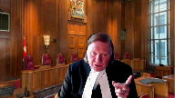
I think that that relates to the second factor, not the third.
And it really is, is this a group which, by its nature and by its operation, by its track record, is one that we can safely say into your hands is going to be given the interests of these third parties.
And I mean, I think the court has to be very careful.
I was corrected yesterday in terms of my use of the term res judicata.
I was wrong.
It is, however, stare decisis.
So we have to be very careful that those who present themselves as advancing the interests of the affected group, there is a genuine alignment of interest.
Otherwise, those whose interests are affected can be adversely affected by a decision which is harmful to them, is disadvantageous to them.
Speaker 7 (00:59:44): And Justice Roe, I actually agree.
And our submission is that that is exactly the right question to ask.
It’s not, is there a genuine interest or a real stake that leads you to down a road of asking about that particular group’s particular history, which is what Chief Justice Hinkson did in this case.
The question is really, I think you put it yesterday, a union of interests or an alignment of interests.
Now, I think that we have to be a little careful, though, because of course, once you’ve got a group that has articulated a genuine and justiciable issue, that has provided the necessary or shown that it is capable of providing the necessary factual context, and shown that it’s capable of marshalling the necessary resources, then really what you’ve got is a group that there’s a pretty good chance that they’re going to be aligned in interest with the rights holders who they’re purporting to speak on behalf of.
And CCLA submission is, once you’ve established all of those things, the alignment of interest should be presumed, although not irrebuttably presumed.
And so what you can have is an attorney general or a respondent who can say, look, here’s our concern.
We have a concern that there is not an alignment of interests.
We have a concern that this group is not the right plaintiff to be representing the rights of these right holders.
And once you’ve got an articulation of that concern, then the issue can be joined.
And I noticed in their responding factum, the attorney general for British Columbia says, well, how are we supposed to get that evidence?
And the answer is, any group who wants to seek standing has to put in an affidavit.
And they can be cross-examined on that affidavit if there’s a genuine concern.
The thing is, if there’s a concern, it should be raised and established by the defendant and not left to, to some extent, what’s happened here, which is you end up with a defendant who lacks any burden whatsoever, can just spend some time theorizing about what might be better, and the plaintiff ends up playing whack-a-mole.
Thank you very much.
I see I’m done.
Thank you. Yeah.
Justice Wagner (01:02:10): Thank you.
Roberto Lattanzio.
Speaker 8 (01:02:14): Chief Justice and Justices, good morning.
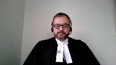
We represent the Advocacy Centre for Tenants Ontario, Arch Disability Law Centre, the Canadian Environmental Law Association, Chinese and Southeast Asian Legal Clinic, HIV and AIDS Legal Clinic Ontario, and the South Asian Legal Clinic Ontario.
And we intervene in this appeal to underscore the importance of increasing access to justice for marginalized and equity-seeking communities aligned with this Honourable Court’s approach to the public interest standing test in the Downtown Eastside decision.
Today, I will make two points from our factum.
That first, it is critical that the test be grounded in the specific context to the actual barriers in accessing justice.
And second, that further direction is needed for a cautious approach when prematurely ending a claim on standing grounds.
So to our first point, as a coalition of six specialty legal aid clinics, our communities comprise of marginalized and equity-seeking groups facing numerous and complex barriers to accessing justice.
Appreciating the realities of many litigants requires a consideration of the complex and broad matrix of factors that make some legal issues and some litigants less likely to come before the court.
This is particularly relevant to matters that impact the interests of marginalized groups.
These barriers can include low or no income, insufficient disability-related accommodations, pervasive stigma related to health conditions and disabilities, precarious or no immigration status, lack of adequate, affordable, accessible housing, and being subject to systemic discrimination on the basis of protected and intersecting grounds.
Our communities are often subject to isolation and marginalization, and they may experience legal problems that are more complex in nature and raise novel rights violations.
Not all of our community members are able to come before the court, and those who do do not do so on an equal basis.
We respectfully submit that the test for standing in all three of its parts must be applied and interpreted in a way that is alive to the realities of the access to justice barriers faced by marginalized groups.
To our second point, in supporting access to justice we ask this honorable court for a clear and strong direction that courts should err on the side of caution before denying standing to a public interest litigant and to do so sparingly and after exhausting less blunt and more appropriate litigation tools, which I would suggest is particularly relevant in this appeal.
Some discretionary powers that prematurely end claims are accompanied by a strong judicial direction about the cautionary manner in which that power should be exercised.
In our factum at paragraphs 13 to 18, we reviewed decisions regarding motions to dismiss a claim and motions to strike.
To be clear, we are not equating these various discretionary powers nor the different burdens that apply, but we point to the common denominator that each of these prematurely ends a claim or an aspect of a claim.
I would like to refer to the decision of this honorable court in Canada and Confédération des Syndicats Nationaux, which commented on the use of judicial discretion in the context of motions to dismiss.
For your reference, this decision is at tab two of our condensed book.
And this court at paragraph one stated, and I quote, that the cardinal principle of access to justice requires that the power be used sparingly.
This court proceeded at paragraph 17 stating that dismissing an action at a preliminary stage can have very serious consequences.
The courts must therefore be cautious in exercising this power.
We suggest that reiterating this caution within the specific context of public interest standing aligns with the Downtown Eastside decision.
As expressed by the majority of this court in Delta Airlines and Lukacs regarding standing, which is at our condensed book at tab four at paragraph 18, then Chief Justice McLaughlin stated, the whole point is for the court to use its discretion where appropriate to allow more plaintiffs through the door.
So in conclusion, we respectfully submit that courts must be alive to the significant impact that ending a claim prematurely has on marginalized communities in their efforts to access justice.
Subject to any questions, these are our submissions.
Thank you.
Justice Wagner (01:07:06): Thank you very much, Cheryl Milne.
Speaker 9 (01:07:09): Thank you.
On behalf of the David Asper Center for Constitutional Rights, I intend to address three points, if the time allows.
The first is the nature of systemic litigation.
The second, the standing issue from the perspective of the remedies sought.
And the third point is the element of the third part of the test respecting whether litigation is an effective and efficient use of judicial resources when there are related proceedings.
Justice Brown asked yesterday, what constitutes systemic litigation?
And counsel for the appellant answered by suggesting that only claims that challenged an entire legislative scheme, such as the prostitution sections of the criminal code would meet the definition.
This is an overly reductive view of systemic litigation that fails to take into account the remedies available and the role of the court in addressing both unconstitutional legislation and government action that impacts groups in society.
I would also note the Downtown Eastside decision uses the term public interest litigation, which transcends the interests of those most directly affected by the challenge law or action and provides access to justice for disadvantaged persons in society whose legal rights are affected.
And that’s referencing paragraph 51 of that decision.
Section 52 remedies are inherently systemic in nature.
A declaration that legislation is unconstitutional to the extent that laws have broad impact across society is a systemic remedy with whether it applies to a legislative scheme or a single provision.
While the Asper Center argues in its factum that there is a marked difference between section 52 and section 24.1 remedies due to the more individual nature of section 24.1 remedies, those remedies can also have a systemic impact to the extent that they affect future government action or groups of vulnerable claimants.
Claim of damages for a single incident, such as in the ward case, clearly requires a claimant who is personally affected, whereas an injunction that prevents government officials from continuing to act in accordance with an unconstitutional policy or practice may not need such a claimant.
Based on the concession made by the appellant yesterday, we have moved past the notion that all constitutional litigation requires an individual claimant to put forward the adjudicative facts.
This is consistent with our argument in respect to section 52 remedies in paragraph six of our factum.
At this point, the requirement that the claim be grounded.
Justice Brown (01:09:38): So I’m just wondering, Ms. Millman, just to pull you back to the systemic point, if every charter challenge seeking Section 52 relief, well, if the mere seeking of Section 52 relief means you’re seeking a systemic remedy, does that mean, I mean, what term is the work systemic doing?
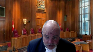
If all charter challenges are systemic, then nothing is systemic.
Speaker 9 (01:10:03): I think it’s, well, I mean, it relates to this issue of the difference between the Section 54 remedies and the Section 24 remedies, and Section 24 being more related to individual claimants and the remedy that is more personal to them.
And so I think there’s a bit of a continuum.
And certainly what we’re arguing in our factum is that the Section 54 remedies require a broad and flexible approach to public interest standing because of that systemic nature.
And it’s the legality principle that is reflected in that in that term system.
Justice Brown (01:10:39): it’s I’m just wondering if that’s the case then does it even matter I mean why why talk about systemic and I agree with you to some point
but and then I want to move on to sort of the yeah
no I don’t you’ve got limited time
I don’t want yes and so
Speaker 9 (01:10:53): So what I want to say though is that at this point the requirement that the claim be grounded in more than a theoretical factual context can be met with lay witnesses and experts rather than requiring that vulnerable individuals direct complex constitutional litigation from the start to finish.
As we’ve heard and we will hear from other groups, the systemic or the practical barriers rather to bringing this kind of litigation.
I want to also talk as we move from the more general principle of legality that’s embodied in section 52 to the more individualized remedies under section 24, the context may demand individual claimants but even those remedies may have a systemic nature that allows for a more nuanced and flexible approach.
And my final point and I’m just kind of jumping through because of the time is that we note in our fact and the problems with equating litigation that is focused more on damage claims such as class actions with the type of systemic litigation that we have here and thereby determining that that proceeding is a more efficient and effective use of judicial resources and represent a context more suitable for adversarial determination.
Yes, it is adversarial but the focus of the litigation is more squarely on monetary compensation.
Our factum notes many of the failings of class actions in particular from the point of view of the public interest including the protected nature of the proceedings, the small individual damage awards particularly for charter breaches, the tendency towards settlement based on monetary issues and not the public interest claim and the historical focus of the claim versus the more forward-facing aspect of the systemic remedy aimed at preventing future harm.
Thank you.
Justice Wagner (01:12:34): Thank you very much, Mr. Cheddar.
Speaker 19 (01:12:38): Chief Justice, Justices, EcoJustice Canada Society intervenes in this appeal because public interest standing is of critical importance to provide Canadians with access to the courts to challenge laws and state action that may otherwise be immune from challenge.
In my time, I intend to focus on one point, public interest standing’s particular importance to uphold legality in the context of environmental protection, where often no directly affected individual exists.
Without public interest standing, state action in this area would be largely immunized from challenge.
And you heard yesterday from my friend, the Attorney General of BC, concerns of public interest applicants overwhelming the courts by having legality and access trump the analysis each time, feathering the discretion of judges to deny standing.
And I want to make clear that affirming the key importance of these goals does not create a presumption of standing.
Access to justice is not necessarily furthered each time standing is granted.
However, where those directly affected are vulnerable or marginalized, as you’ve heard from several interveners today, the barriers to access to justice, the grant of standing to a representative public interest group may facilitate access to justice in that context.
And the same is true for legality, that the flexible and propulsive approach articulated in Downtown Eastside demands this context-specific analysis for each matter, assessing whether legality and access concerns are present and whether they will then be addressed through the grant of standing.
And the context that I want to draw your attention to, which I think is illustrative, is environmental litigation.
It’s often true in this context that no directly affected individual exists.
Here, public interest standing preserves the jurisdiction of the courts to review the legality of state action and inaction that impacts our environment.
As said by Justice Evans of the federal court in the 1998 Sierra Club decision, which concerned environmental assessment legislation, and is referenced at paragraph 29 of our factum, if the sole purpose of public interest standing was to protect vulnerable but otherwise directly affected individuals, then in this context of environmental protection, quote, a wide range of administrative action would be exempted from the restraints of legality and the need to comply with the duly expressed will of parliament.
That’s paragraph 54 of that decision.
As an example of this principle, parliament and many of the provinces have expressed their will to protect vulnerable species and preserve Canada’s biodiversity for future generations through the inaction of species at risk legislation across Canada.
These species cannot access the courts on their own to have laws enforced.
By necessity, enforcement of the legality of these statutes is dependent on organizations relying on public interest standing to have these matters heard.
Proposed modifications to the elements of the public interest standing test whether it is reframing genuine interest to require explanation of how the applicant is a suitable proxy or demonstrating unanimity or general agreement among those affected will have a particular impact in this context where there are no directly affected individuals.
And as noted again by Justice Evans in Sierra Club, particularly for the environment where public opinion is so fragmented, quote, public interest groups with a relevant track record will often be the only likely litigants willing and able to institute legal proceedings to ensure that statutory duties are discharged by the public officials upon whom they have been imposed.
And that’s also at paragraph 54 of that decision.
Despite the assertions of my friend yesterday, affirming legality and access as the primary goals of public interest standing, does not tip the scales, nor does it feather judicial discretion to deny standing.
Balancing of these purposes against underlying purposes to restrict standing is always necessarily driven by the context.
Where there are serious legality and access to justice concerns, as is almost always the case in environmental litigation, these key purposes warrant particular attention in order to fulfill the flexible and purposive approach that is required to ensure that justice is served.
And subject to any questions, those are my submissions.
Justice Wagner (01:17:16): Thank you very much.
The court will take its morning break, 15 minutes.
The court, la Cour. Thank you.
Ms. Scalvert.
Speaker 11 (01:17:33): Chief Justice, Justices, the test for standing corresponds to the function of the court.
It requires that a claim be justiciable and it means that there must be a case or controversy.
That requires an entity with a manifest interest that’s manifestly opposed to someone else.
We can classify the nature of the interests at issue into those supporting regular standing or those supporting public interest standing, but it ought to come to the same.
What we should not be doing is building complicated doctrines around simple ideas that do nothing more than impede the ability of legitimate claims advanced coherently with bases in fact by genuinely interested litigants to be decided by the court.
If there are concerns about excessively hypothetical abstract or speculative claims being brought before the court for determination, the doctrine of justiciability is perfectly capable of meeting those concerns.
That is also what prevents so-called private references.
Ordinary litigants cannot simply pose a theoretical question and demand an answer.
They must prove facts and persuade the court that those facts entitle them to a judicial remedy.
This is a far cry from using the court as a venue for academic debate.
However, there is no special magic in requiring those facts to be facts about individuals.
There is no special magic in individualized facts, either from the perspective of justiciability or generally.
So what I think is needed is to tease apart the notion of concreteness from the notion that only individual facts can be concrete and everything else is going to leave the court to hopelessly marred in abstraction.
There’s a great deal in between of concrete facts about how legislation is playing out on the ground with how it affects groups.
So individuality is not synonymous with concreteness.
If individualized facts are really necessary for a properly pleaded and proven claim and are not ultimately tendered, then the claim should fail.
But it should fail on its merits, not as a matter of standing.
Justice Rowe (01:19:59): But are not rights, do they not appertain to individuals ultimately?
Speaker 11 (01:20:07): the effect of the effective legislation can be first of all yes charter rights do but there are a number of other rights that can be not rights but legality and constitutional issues that don’t pertain to individual rights federalism issues section 96 issues this test that the court is being asked to develop also needs to apply to administrative law challenges public understanding could be engaged there so we’re not it’s important to remember that although this case involves a charter challenge that’s not the only instance in which public interest standing questions can arise and so it’s important not to be drawn into framing everything in terms of right individual rights holders
Justice Jamal (01:20:50): So that means that presumably it could be evidence from a healthcare worker as to how the legislation is being applied, it could be evidence from a specialized group that has collective expertise on how the legislation is applied.
You don’t need somebody, a patient, necessarily.
Speaker 11 (01:21:05): Pardon me.
Yes, thank you, Justice Jamal.
That’s exactly the point.
Facts can be concrete and tangible and can supply a factual record without necessarily being about individuals.
And I stress this because the premise that’s put to the Court is essentially that legitimacy depends on these individual factual matrixes, and Justice Moldaver suggested that that perhaps that was a red herring yesterday, and I agree.
The legitimacy function of the standing inquiry is to ensure that that there’s a party with a genuine interest in the resolution of a justiciable question.
And that’s what ensures that the judicial powers legitimately engaged.
And that’s why it’s not helpful for there to be a wide ranging inquiry into how litigation is set up and how the litigant intends to prove its case.
Justice Brown (01:22:03): So what work is the consideration as to whether the issue will be presented in a sufficiently concrete and well-developed factual setting?
What work is that doing?
Speaker 11 (01:22:15): Well, you know, as Justice Justice Karakatsanis mentioned yesterday, that the chief concern is ensuring that the court will have the facts that it needs to resolve the case.

What work is that doing in terms of, in terms of this?
So there’s two points.
One, and the essential point is that the facts that are needed will depend on the nature of the issues.
So there shouldn’t be, so I think you have my point on that.
The function of that in the overall test, frankly, it’s not entirely clear that it’s necessary, but we have it.
And so its function, I would say, is to discern between, to differentiate between different possible vehicles, theoretical or actual, by which the litigation might be brought before the court.
So if one has more promise in terms of the ability to bring the necessary factual record to bear, then that’s a consideration in favor of that as opposed to some other, some other vehicle.
But it does not go to the conceptual heart of what standing is about.
And I see that I’m out of time.
Justice Wagner (01:23:24): Thank you very much, Ms. Calvert.
Sameha Omer.
Speaker 12 (01:23:32): Good morning Chief Justice, Justices.
I represent the National Council of Canadian Muslims.
At the heart of this case is an important question.
Should this court reevaluate the test in Downtown Eastside for public interest standing?
We submit that this court’s evaluation of the standing test must acknowledge that public interest standing is particularly appropriate when potential charter claimants from marginalized communities would face significant risk of harm or reprisals arising from bringing a claim.
The test must be contextual and it must be informed by the lived realities and unique experiences of marginalized and vulnerable groups who are directly impacted by government action or legislation, including racialized and religious minorities.
I submit two points today from our factum, particularly as it relates to Canadian Muslims.
First, public interest organizations are crucial to advancing access to justice and for bringing forward complex constitutional and systemic challenges on behalf of marginalized and vulnerable groups, but they are particularly important for those groups who have historically faced and continue to face backlash such as hate, violence, threats, stigma, and persecution.
A number of recent cases before our courts, which we have noted in our factum, have served to highlight the hostility and prejudice that is often directed towards Muslims in Canadian society.
For example, in Paramount v. Johnston, the plaintiff was defamed and branded a child killer and terrorist and was harassed by the defendant at a mall alongside his children after filing a civil claim.
And so we submit that Canadian Muslims, including those who are brave enough to step forward into a courtroom as plaintiffs, face the risk of harm, stigma, and personal danger.
Public interest litigants play a critical role by taking on these risks, which would otherwise fall on individual plaintiffs and would be able to present these lived realities and experiences without any fear or hesitation to allow the courts to appreciate the broader effects and public impact of its potential findings.
Secondly, in considering both the serious justiciable issue and the reasonable and effective means factors, courts should be careful not to impose strict or rigid procedural requirements or hurdles that would obstruct access to justice for marginalized and vulnerable groups and the advancement of charter values.
Justice Cromwell highlighted the flexible and generous nature of the standing test in Downtown Eastside, stating in paragraph 28 that a complete denial of standing is a blunt instrument.
In other words, depending on the circumstances of the case, it is not the only necessarily the most appropriate means of guarding against the concerns that justify strictly limiting standing.
And indeed, it is a blunt instrument because it can essentially rob from marginalized and vulnerable groups the rare opportunity that they have to have their voices heard in the courtroom and their rights vindicated.
And so courts should therefore promote access to justice while using other practical means to preserve judicial resources short of denying standing.
In assessing the reasonable and effective means factor, this court has provided a non-exhaustive list of interrelated considerations, which includes the existence of potential plaintiffs.
However, Downtown Eastside specifically noted the impracticality of sex workers bringing a constitutional challenge due to privacy and safety concerns and the threat of potentially increased violence by clients.
Accordingly, we submit that where those who are directly impacted are marginalized and fear reprisal or they face a heightened risk of violence or hate, courts should weigh heavily in favor of granting standing irrespective of whether plaintiffs exist or can be located.
Courts should be mindful that a preference for an individual plaintiff in these circumstances, particularly those that belong to a marginalized group, to bring forward a charter challenge, even if it is as a co-plaintiff alongside a public interest litigant, may in fact perpetuate or exacerbate the disadvantage that they already face by potentially exposing them to further harm or risks.
This is entirely consistent with Downtown Eastside where the existence of a potential private litigant was but one factor, which may be outweighed by other considerations in the reasonable and effective analysis.
And this reflects the contextual nature of the standing test and highlights the importance of assessing standing in light of the practical realities and the needs of those most impacted.
In assessing the reasonable and effective means factor, we also submit that courts, among other considerations, should also explicitly give weight to whether those impacted by state action or legislation face harsh socioeconomic challenges such as hate, violence, stigma, systemic racism, and they should also consider whether the challenge raises issues that are likely to prevent or discourage individuals belonging to marginalized groups from bringing forward their claims, such as issues that are private, controversial, or stigmatizing in nature.
And to conclude, it would be inconsistent with the evolution of the standing test if this court backpedals from the liberal and generous approach articulating Downtown Eastside and adopt a rigid, strict, and narrow approach that’s being argued by the appellant here.
Thank you.
Justice Wagner (01:28:42): Thank you very much, Ms. Karen Specter.
Speaker 13 (01:28:50): Good morning Chief Justice, Justices.
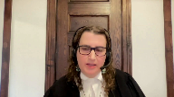
I appear on behalf of the Mental Health Legal Committee to bring the perspective of lawyers in Ontario who represent clients with mental health disabilities including in constitutional challenges to mental health legislation.
We intervene to ask this court to reaffirm the flexible and generous test established in downtown Eastside in respect of organizations seeking standing without a directly affected individual co-litigant with private standing.
We have two submissions.
First, a flexible and generous approach to public interest standing must consider the context including the marginalization and disadvantage of individuals directly affected by the impugned legislation.
And second, the application of the public interest standing test must not rely on paternalistic and stereotypical assumptions regarding persons with mental health disabilities.
And I will address the issue of alignment of issues in my second submission.
A flexible and contextual approach in cases impacting marginalized communities permits a factual setting to be established without a directly affected private litigant as occurred in downtown Eastside.
An analysis of the context in challenges to mental health legislation includes consideration of the structural barriers our clients face accessing justice such that the likelihood of a client with mental health disabilities coming forward as a suitable individual litigant in constitutional litigation depends on an alignment of a broad confluence of favorable factors including resources to find and retain counsel, stable life circumstances for the sustained availability and willingness to participate in contested litigation over multiple years, acceptance of the invasive scrutiny of the person’s highly private health matters.
Justice Rowe (01:30:36): hang on now.
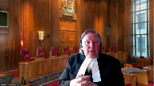
You seem to be basing this on the assumption that an individual goes off and engages private counsel and bears probably an unsustainable burden, but that’s not what we’re talking about.
What we’re talking about is individuals and groups representing the broader community, and the heavy freight of the cost is borne by the interest group, albeit oftentimes or sometimes.
There’s a provision of cost to the group.
So if you were saying that we shouldn’t put the burden on a marginalized individual, I would say of course yes, but that’s not really the point, is it?
Speaker 13 (01:31:25): Thank you justice.

Our submission is that that still is relevant whether or not there’s a public interest organization alongside an individual that still imposes a very heavy burden on that individual.
Their records are still their private medical records are still in play and it is difficult even as council to find a suitable individual to to go alongside that organization.
So if public interest standing requires that it will be a heavy barrier a heavy burden for public interest organizations to bear and individual persons with mental health disabilities.
It is the absence of a directly impacted private litigant that gives rise in my respectful submission to the very need for public interest standing.
And a rigid approach to standing including the requirement to have a private litigant alongside will create too high a threshold and defeat the very purpose of public interest standing.
Our second submission is that the application of the test and challenges to mental health legislation must not rely on paternalistic and stereotypical assumptions regarding persons with mental health disabilities.
Since constitutional litigation does not necessarily need to be advanced by a directly affected individual it must not be presumed that the lack of a private litigant is due to their support for the impugned provisions.
Such an inference ignores the structural barriers these individuals face in bringing these constitutional claims and would have a discriminatory and disproportionate impact on persons with mental health disabilities.
Equating the absence of an individual litigant with support for the impugned legislation is premised on paternalistic assumptions that persons with mental health disabilities have deliberately refrained from challenging legislation because it is purportedly for their own good and that should not be part of the test for public interest standing.
In terms of alignment we say that while it is important that organizations seeking standing properly represent the rights and interests of individuals who are directly impacted we must ensure that organizations are not subjected to a higher level of suspicion and scrutiny on the basis that the interest they’re seeking to advance are not necessarily in the purported best interests of persons with mental health disabilities.
The alignment must be between the actual interests of the directly affected individuals and not their purported best interests.
And also we also not need to understand that we can’t reinforce this false dichotomy between public interest organizations and persons with mental health disabilities as such organizations are often comprised of and run by persons with lived experience such as the Empowerment Council as noted in Thompson and the Society as noted in Downtown Eastside.
Thank you very much.
Justice Wagner (01:34:14): Thank you.
Speaker 14 (01:34:17): Chief Justice, Justices, despite their assertions to the contrary, the appellant does propose changes to the framework for public interest standing.
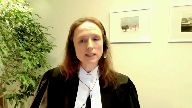
Downtown Eastside Sex Workers United Against Violence does not require an organization to prove they’re a proxy for an individual or explain why they’re not an individual or joined by one, but this is what the appellant seeks as an addition to the test.
Downtown Eastside also does not impose a burden to show specifically what evidence an organization will provide to make out its case at a preliminary stage, but again this is a change that’s sought.
These changes in our submission would create a new rebuttable presumption against public interest standing for organizations and the BC Civil Liberties Association submits that the appellant’s proposal is unnecessary and counterproductive and would undermine the existing flexible contextual and case-specific approach required in Downtown Eastside.
The proposal to change the framework does not address any practical or principled problem that exists.
The appellant calls up a range of fears about plaintiffless litigation and cases without facts, but these are simply not characteristics of actual public interest litigation brought by organizations seeking to advance the law and they’re not issues arising from the existing test for standing that need to be addressed by limiting access to the courts.
Public interest organizations are real plaintiffs with concerns that are not divorced from the concerns of individuals.
Instead, organizations facilitate the consolidation of those concerns.
They look to vindicate the interests and rights of constituencies and they’re addressing issues that affect real people, including harms to individual rights that are experienced on a systemic level.
A central concern for standing course is whether a piece of litigation is going to be effective and in considering systemic claims particularly, the experience in the case law is that cases brought by public interest organizations are effective.
They can assist the court with robust, efficient litigation not done in slices, but that meaningfully examines systemic, systemic unconstitutional effects of laws.
Justice Rowe (01:36:27): The most famous example of litigation that addressed systemic discrimination is of course Brown and Board of Education.
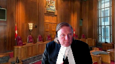
It wasn’t NAACP against Board of Education.
It was supported by the NAACP, but there was an individual, Brown.
Speaker 14 (01:36:51): Yes, that is an example of a piece of systemic litigation that was supported by an organization, but that is not the sole method of pursuing systemic claims.
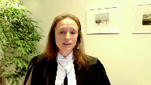
And in our submission, what is happening in this case is the Attorney General is telling the court what it prefers to meet in terms of public interest litigation.
It would prefer to be met by individualized test cases, perhaps accompanied by a public interest organization.
Where the claim is founded on the factual situation of one person who’s the plaintiff.
Test cases are one means of pursuing claims and they can tell you about the application of the law in a circumstance, but that’s not the only means and that’s not excluded by the public interest standing framework that’s articulated in Downtown Eastside.
And in our submission, accepting the Attorney General’s preference as a presumption is not consistent with Downtown Eastside and it’s not helpful to the courts.
You know, the idea that there must be a right plaintiff confuses what systemic charter litigation is about.
And in our submission, accepting the Attorney General’s proposal would in fact accept an approach based on form over substance.
Public interest organizations are not presumptively problematic as plaintiffs.
They simply do not have the resources or any motivation to waste time and money on claims that are not well-founded or suitable for adjudication.
In fairness.
Justice Brown (01:38:18): Yes, I think the Attorney General conceded that an individual plaintiff is not necessary.
Speaker 14 (01:38:25): Yes, that’s true.
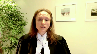
That’s correct.
And I think that illustrates the fact that the appeal is essentially about their preference for how to receive these claims, given the strictures that are being proposed for the additions to the test.
But in our submission, a stereotype about organizations bringing unfounded litigation is not tethered to reality.
And in my submission, the BCCLA is motivated by essentially the same concern that motivates courts, which is the pursuit of legality.
And in our submission, accepting the Attorney General’s proposal would in fact fundamentally impede the court’s ability to have properly developed cases before them for adjudication.
And this interferes with the effective operation of the court system as a whole, which, as we know, is a central concern for public interest standing.
Justice Wagner (01:39:26): Anthony Navadilan.
Speaker 15 (01:39:32): Thank you.
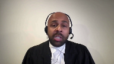
The Canadian Association of Refugee Lawyers intends to make three points today.
First, the meaningful impact the current standing test has had for legality and access to justice for refugees.
Second, the varied ways organizations have successfully built factual records in refugee cases they’ve brought to the court.
And third, the proper timing for when standing should be decided.
Now refugee law involves questions of life and death, and the charter implications of decision making in this area should be obvious.
Yet since the Immigration and Refugee Protection Act came into force in 2002, not a single case of a refugee acting alone has resulted in a declaration of constitutional invalidity.
Now this is not surprising, given the challenges faced by refugees in commencing and completing litigation.
Refugees face financial and language barriers in accessing counsel, many are reluctant to challenge state action while their status in Canada is uncertain, and some may be deported from Canada before their litigation is completed.
These barriers should have demonstrated the compelling need for public interest litigants to vindicate the rights of refugees.
But in the 1990s and in the 2000s, the Federal Court of Appeal and this court consistently denied public interest standing in refugee cases based on the existence of a theoretical private litigant who could have brought the case.
The modest innovation of Downtown Eastside was to recast the existence of potential private litigants as but one factor to be weighed, and possibly outweighed, in asking whether the public interest litigation is a reasonable and effective means to bring the case.
The impact of this innovation on legality and access to justice and refugee law has been dramatic.
In the decades since Downtown Eastside, the Federal Court has issued four declarations of constitutional invalidity of laws relating to refugees, all of which were cases brought by public interest organizations.
Those cases open profoundly important rights to refugees, including access to public health care, to administrative appeal rights, and to risk assessments just prior to deportation.
But at the same time, the current standing test has not opened the door to frivolous or busybody litigation.
Indeed, the federal government declined to pursue an appeal in three of those constitutional cases, and it did not challenge standing on appeal in the fourth.
The current standing test has also not allowed for abstract litigation.
Instead, in the cases in which Carl was involved, we were able to present a proper factual record of the hearing through a diverse variety of means, each tailored to the nature of the given case.
And three examples of this are found at paragraph 15 of our Factum.
In Avira’s case that challenged delegated authority, Carl acted as a sole litigant as legislative facts, as opposed to adjudicated facts, were most salient.
In a case of refugees barred from access to Canada, Carl again acted as a sole litigant as those directly affected were outside the country, but we included in the record detailed affidavit evidence of the experience of those denied entry to Canada.
Lastly, in the case of a denial of refugee health care in Canada, Carl acted with private co-litigants directly affected by some aspects of the impugned regulation, but we supplemented their evidence with that of non-parties such as doctors and social workers to detail the impact of the entire regulation.
So in other words, there are multiple and varied ways in which public interest litigants can and do successfully build factual records, often better records than private litigants.
The proper formula will inevitably be case specific, and it doesn’t lend itself to a one size fits all rule.
The requirement of paragraph 52 of Downtown Eastside that courts must consider whether the issue will be presented in a sufficiently concrete and well-developed factual setting is sufficiently flexible to permit trial judges to consider each case in its own context, and then to decide taking into account the nature of the case and at what stage of the litigation standing is being challenged, whether the court has confidence that an appropriate factual record will be available at trial.
The current Downtown Eastside test has proved adequate to that task and does not need further modification.
Finally, as an organization that engages primarily in judicial review, Carl disagrees with the appellant’s argument of paragraph 69 of its factum that public interest litigants must establish they meet the standing test at the time standing is challenged.
While the dangers of allowing early challenges to standings in the context of actions may be clear, there’s an even more important, potent reason to reject that kind of rule in the context of applications, and that is to do otherwise would interfere with the summary nature of applications and the strong emphasis on moving the matter along to a hearing as expeditiously as possible.
Preliminary motions to challenge standing frustrate this imperative and are to be discouraged in the application context.
Given this, Carl submits to the burden on the respondent in bringing a preliminary challenge to standing in an application should be substantial, and the federal court of appeal has consistently required the moving party in this context to provide a quote showstopper or knockout punch that reveals it’s plain and obvious the application for judicial review is bereft of success because the applicant lacks standing, and that case law can be found at paragraph 22 of our factum.
We ask the court to endorse those stringent standards in the context of preliminary motions to attack standing and applications, and absent meeting that standing, or that standard applications to challenge standing should be deferred to the merits.
Justice Wagner (01:44:43): Thank you very much.
Jason Arman.
Speaker 16 (01:44:47): Chief Justice, Justices, we appear on behalf of West Coast Legal Education and Action Fund.
In our written submissions, we developed several reasons why the AGBC’s proposed modification of Downtown Eastside should be rejected.
The first is that it would represent a break from the practical reality of how modern constitutional claims for Section 52 remedies unfold, which is not primarily through the evidence of the litigants themselves, but rather through expansive evidentiary records composed predominantly of non-litigant witnesses and experts.
We have canvassed a number of recent systemic charter claims to illustrate that point.
But I understand the AGBC to have conceded yesterday that directly affected plaintiffs and their evidence are not necessarily required by Downtown Eastside.
So I will focus on our second point, which is that the AGBC’s suggestion that the reasonable and effective means step requires a preview of the evidence to be called at trial is not consistent with Downtown Eastside.
I want to make two points on that.
First, at the serious justiciable issue step, the first step of the test, Downtown Eastside expressly proscribes a probing review of the case on the merits.
And you can see that in the second sentence of paragraph 42, where Justice Cromwell states that the claim must be, quote, far from frivolous, but that, quote, courts should not examine the merits of the case in other than a preliminary manner.
Justice Cromwell further notes that the test is whether there is a foregone conclusion that the litigation will fail.
He even notes that the court is willing to assume that impugning legislation previously upheld as constitutional may still satisfy the first step of the test, so long as there have been amendments to that legislation in the interview.
Justice Brown (01:46:40): I wonder, though, whether there’s a difference, Mr. Harman, between the merits of a case and how the case will be presented, which I understand, maybe incompletely, to be the gravamen of the Attorney General of B.C.’s concern.
Speaker 16 (01:46:56): I think I agree and I’m going to get to that, but at first I’d like to say that it doesn’t make sense to me to preclude a searching type of analysis at the first step, only to then bring it back in at the third stage of the test.
And indeed my second point is one that I believe Justice Brown, you asked earlier, and when you look at the language used in Downtown Eastside to describe the third step of the test, it is clear that reasonable and effective means does not create a requirement on the plaintiff to present a preview of the evidence.
If we turn to paragraph 51 of that judgment, Justice Cromwell gives examples of factors to take into account on the third step of the test.
The factor relied on by the Attorney General to require consideration of trial evidence is the first of them.
And on that point, Justice Cromwell writes, I quote, the court should consider the plaintiff’s capacity to bring forward a claim.
In doing so, it should examine, amongst other things, the plaintiff’s resources, expertise, and whether the issue will be presented in a sufficiently concrete and well-developed factual setting.
Now all of these examples concern the organization’s capacity to bring forward the pleaded case.
The reasonable effective means criteria is not then a requirement that the plaintiff present a preview of its trial evidence.
Rather, the focus of paragraph 51 is not on evidence at all, but on the suitability of the plaintiff in relation to its claim, as determined by the pleadings and the nature of the organization.
Which goes to our point that the standing inquiry is distinct from a summary trial on the merits of the claim.
The question on standing is whether the public interest litigant is considered in itself a reasonable vehicle for bringing forward the proposed litigation.
And as we outline in our factum, the reality of modern charter litigation, particularly involving systemic claims, is that a very substantial evidentiary record is required.
Now it is appropriate to ask whether the public interest plaintiff has the capacity to muster such a record, but to require it to be shown at the earliest stages of litigation, even in the sense of the mere contours of what the record will ultimately be, as the Attorney General demands, is far too onerous and would too greatly chill public interest litigation.
And that would in particular prejudice the marginalized and vulnerable communities who most frequently rely on public interest organizations to help vindicate their rights.
As a final point, I say that the fears of busybody public interest organizations clogging up the courts with systemic charter claims is entirely unfounded.
There is no evidence or commentary to suggest that the floodgates burst when the test for public interest standing was liberalized in Downtown Eastside.
I urge the court not to reshape the test and limit access to justice on the basis of this specter.
Thank you Chief Justices.
Thank you very much.
Justice Wagner (01:49:54): Faisal Bhabha
Speaker 17 (01:50:00): Mr. Chief Justice, Justices, the Center for Free Expression has one submission today.
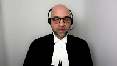
Respectfully, we ask this Court to consider freedom of expression in its analysis of the issues on appeal.
This is not just because public interest standing facilitates litigation that allows charter rights, including Section 2, to be vindicated, but it’s also because we submit freedom of expression is essential to upholding the principle of legality, which this Court has held to be a rationale justifying the doctrine of public interest standing.
The Court has repeatedly described three essential purposes behind freedom of expression, the preservation of individual self-realization, the advancement of knowledge, and the promotion of democracy.
We submit that all three of these rationales are at play in the context of public interest litigation.
Number one, it’s our submission that public interest standing facilitates individual expression by enabling individuals that are adversely affected by legislation or administrative action to both participate in and benefit from litigation without having to take on the costs and risks, which in many cases can be prohibitive.
Secondly, public interest standing advances knowledge because it pushes back against the risk that serious, justiciable issues will never get to court simply because the affected parties can’t afford to litigate.
Not only do adjudicated decisions about fundamental rights vindicate individual rights and hold government to account, they also advance knowledge by educating the public about what the Constitution means.
Finally, public interest standing helps promote democracy, a third purpose of freedom of expression.
Access to adjudication provides a platform for people, individually and together, who don’t have access to other comparable forms of making social and political critique to make that critique, to obtain disclosure, to examine evidence, all of which promotes transparency and the public’s right to know.
Also to seek personal and systemic remedies, which promote accountability.
All of these shore up the quality of the country’s democratic fabric.
Indeed, the purposes of freedom of expression specifically dovetail with the rationale of legality.
According to this court, legality has two components, both that state action should conform to the Constitution, obviously, but also that there must be practical and effective ways to challenge the legality of state action to hold the state to constitutional account.
Because without meaningful enforcement, legal rights mean very little.
Rights need remedies, remedies need courts, courts need access, people need access to courts.
Yet we find in the increasingly courts are inaccessible to the people and communities who need rights the most.
This reality grounded this court’s creation and development of the doctrine of public interest standing.
And this reality remains real.
The barriers of time, cost, reputational risk and more are mitigated when the litigant is not an individual.
For some cases, not only is public interest standing justifiable, it’s necessary.
It might even be better, as you’ve heard, today, in some circumstances.
A public interest case can advance a matter of fundamental importance even better than an individual litigant could.
The work of public interest litigants, therefore, is key largely because the state itself does not enforce the standard of legality on itself.
The state, in this respect, needs public interest litigants.
The Constitution needs public interest litigants.
And this is because unconstitutional legislation must first be implemented as law before it can be challenged for unconstitutionality.
There is no meaningful process for internal review.
As the Federal Court of Appeal upheld in Schmidt, and we address this in paragraphs 26 to 28 of our Factum, the role of the Minister of Justice in ensuring legality of legislation prior to its adoption is de minimis at best.
Meanwhile, government lawyers are not ethically or legally obligated to report potential or actual constitutional violations generated by legislation.
And so, therefore, the burden of upholding legality rests entirely with members of the public who are expected to…
Yeah, but I…
Justice Rowe (01:54:27): I mean, there’s a distinction, I think an important one, between something like Operation Dismantle 1985, who has standing to say, well, I’m afraid someone’s going to drop an atom bomb in my head, versus Fraser, a recent decision of this court with respect to pension benefits.
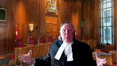
The first one, Operation Dismantle, of course, you have to have someone, a group, because there’s no particular individual.
In Fraser, there were individuals, and it just sort of made sense in Fraser to say, well, here’s the circumstances of an individual, whereas Operation Dismantle, it didn’t.
Speaker 17 (01:55:11): I see my time has expired, with your indulgence I’ll respond briefly.
Overlapping speakers (01:55:15): Yes, please.
Speaker 17 (01:55:16): So, I think, Justice Roe, this point goes to the issue of the sufficiency of what is required at the pleading stage.
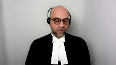
And I would just echo the submission that’s been made well and repeatedly in this proceeding that individual litigants don’t necessarily plead more sufficient records or create better records than public interest litigants, and it’s important that a record be sufficient and that a case be pleaded adequately, no doubt.
And we take no issue with that.
We urge you to not presume that individual litigants can make better cases than public interest litigants because we don’t think that that is empirically accurate.
Thank you very much for your time.
Justice Wagner (01:55:59): Thank you, Fahad Siddiqi.
Speaker 23 (01:56:04): Thank you, Chief Justices.
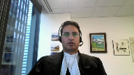
My clients are volunteer associations of lawyers that provide pro bono legal services and legal clinic services for members of visible minority communities who do not have the means to access the legal services they need.
And here they make one submission.
The court should make it clear that lower level courts should consider the full monopoly of circumstances facing people who are affected by legislation directly when assessing the reasonable and effective means factor.
My client’s experience is with visible minority communities, and our factum therefore focuses on visible minority status.
But the principle applies across a variety of groups that face disadvantage.
One good example is the Frazier case, which we cite at paragraph 8F of our factum.
In that case, Justice Ducharme took into account a range of practical hurdles preventing foreign migrant workers from bringing a constitutional challenge to themselves.
And he took a common sense approach to the barriers making it difficult for foreign migrant workers to give evidence on the standing motion brought early on in the case.
The most notable factors in that case were that the affected individuals were of foreign origin, poor, lived on their employer’s property, feared reprisal, and could be removed from the country on 24 hours notice without any right of appeal.
As the Frazier case shows, there are good reasons why individuals may not be able to carry on litigation, but also good reasons why they may not be able to give extensive evidence at the outset of a lawsuit.
Sometimes ducks can’t get to the row on day one.
The point is that courts should be practical and pragmatic when assessing the third factor and the availability of witnesses on an early motion, especially when there is a serious justiciable issue on the face of the impugned legislation.
I can say it no better than Justice Ducharme, who wrote at paragraph 119 of his reasons in Frazier, that it is asking too much to require vulnerable individuals living at the margins of society to make decisions as if they were fully rational actors operating in a perfect marketplace of information and ideas.
And we say that is exactly the right approach, and it’s the same approach reflected in paragraph 51 of this court’s decision in Denton Eastside.
So where does this fit in?
It’s important to recall a procedural reality that Justices Moldaver, Caricatsanis, and Jamal alluded to yesterday, and that Justices Brown and Casirer alluded to this morning on motions and pleadings.
Standing is sometimes challenged on a motion to strike, such as in the Frazier case referred to in our materials.
And as everyone knows, motions to strike are sometimes no evidence motions in which the court is confined to the pleading and must accept the allegations in the originating process as true, unless they are patently ridiculous.
So when the court issues its reasons in this case, it will not only be providing guidance to first instance judges on what types of facts may be acceptable as true when assessing reasonable and effective means on the basis of a pleading alone, it will also be providing guidance to litigants on the material facts they must plead in order to survive a motion to strike.
In conclusion, we say that in this context, guidance on the importance of the range of practical hurdles that may make public interest litigation a reasonable and effective means would assist courts, would assist plaintiffs, and would assist in eliminating time consuming motion practice by signaling to defendants that challenging well drafted and particularized pleadings at the outset of a constitutional challenge is unlikely to be appropriate.
Thank you very much, Chief Justice.
Justice Wagner (02:00:09): Thank you very much, Alison Latimer.
Speaker 19 (02:00:14): On behalf of the John Howard Society and Queen’s Prison Law Clinic, I’m going to develop that litigants with public interest standing don’t have to plead individual facts.
In most cases they will have to prove individual facts and that should normally occur at trial in order to win their case on the merits, but they should not be put to the proof of those facts at a preliminary stage of the proceeding on a standing motion brought at a time of the Attorney General’s choosing.
This position that I’ve outlined creates in my submission a level playing field with the expectations of the courts and parties in respect of the Attorney General’s section one or DORAY defense which very often includes not only the state’s objectives but also asserted beneficial effects of a law or practice.
And so for example in the prison litigation context issues like those raised in Canada’s factum such as the interests of third party rights holders and institutional safety would normally be raised by Canada in defense of the action and in that context the Attorney General’s pleadings will usually talk sort of at a general population level about the effects of the law or practice and what those effects might be on some but probably not all people.
Canada would not normally plead any facts about the effects of the law on any particular individual and despite those what I’ve described as population level pleadings the plaintiffs are not able at a time of their own choosing to demand Canada’s witness list and put the Attorney General to the proof of those facts.
They have to wait for an orderly exchange of trial plans and the actual trial to unfold.
It’s in my submission it’s wrong to suggest that a pleading like that by any party is not concrete or is abstract or hypothetical and if there’s a concern for case management judges that they need to address arguments that pleadings lack sufficient particularity or that trial plans are insufficiently developed in my submission it’s consequential whether this court situates that authority in the doctrine of standing or somewhere else like a requirement for particulars and the reason that’s consequential I say is because standing challenges are really one-sided whereas requirements for particularized pleadings and sensible trial plans and proof of facts and charter litigation are always at least two-sided.
So situating the burden in the standing doctrine creates a very substantial one-sided and in my submission unfair burden for plaintiffs and it’s particularly unfair in light of the barriers faced by many charter claimants in accessing the courts and especially prisoners which has already been highlighted by West Coast Prison Justice.
In my submission a requirement to file affidavits by directly affected prisoners in response to a standing motion will also often not be helpful in advancing the question of whether the plaintiff’s proposed suit is a reasonable and effective way to pursue the litigation at an early stage in the litigation.
The lived reality for prisoners is that their lives are very thick with both executive and regulatory control and that is often very has very obvious impacts on their charter rights usually at the very least their residual liberty interests under Section 7.
Those statutory and executive controls may also result in other kinds of restrictions for some prisoners on their charter rights like security of the person or life or equality and the extent to which those compounding infringements might be significant might be saved at Section 1 or might inform the remedy the remedial stage of the hearing but in my submission it’s not those aren’t issues to be examined on a standing motion that should all occur at trial and many cases are brought forward by public interest litigants which have already been studied and written very extensively about before the case is ever pleaded and here I’m referring not only to in my submission the very valuable work of legal academics but also that of governments, empirical researchers and independent ombuds people who who have data and who who study these issues in that context it would be very unusual to have a true controversy about whether a law or practice actually impacts an individual.
In many cases such as the ones I’m describing that’s apparent from the very nature of the law or the state action that’s under consideration.
It’s also not usually controversial that those people are identifiable and some might be even identified in the research and there’s also no guarantee in my submission that an individual who prepares an affidavit at an early stage in the proceeding before a matter gets to trial will still be committed to giving evidence years later when when you get to trial.
I want to respond very quickly to Justice Brown’s question about what work is left for the sufficiently concrete and well-developed factual setting and I say this differs from case to case but one factor courts should consider is that it needs to remain flexible to the tactical decisions made by the Attorney General about the timing of their standing motion.
If it’s brought early the focus will necessarily be on the pleadings.
I see I’m out of time.
Justice Wagner (02:05:36): Thank you very much.
Ms. Mitchell?
Speaker 20 (02:05:43): Good afternoon.
On behalf of animal justice, I would like to draw the court’s attention today to the experience of claimants in challenges to government laws and actions that impact the rights and interests of animals.
And as Justice Sossin recently observed in Schnur and Canadian Tire, claimants in such cases have faced particularly difficult challenges in meeting the threshold for public interest standing.
To illustrate the challenges faced by such claimants, I invite the court to review the cases set out at footnote eight of Animal Justice’s Factum, and I will not take you through those cases today.
But what I would say is that they demonstrate that claimants in cases involving animals face challenges satisfying all three branches of the Downtown Eastside framework.
Before and after Downtown Eastside, the seriousness and just disability analysis has proven particularly challenging.
But under the third branch of the analysis, courts have repeatedly also identified, quote, more appropriate approaches that claimants could take.
That includes filing complaints with law enforcement or private prosecution.
So we’ve set out more detailed arguments in our Factum, but at a very high level, what I would say is that the experience of individuals and groups in cases involving the rights and interests of animals illustrates two overarching points.
The first is that it is not in the interest of justice to place even greater restrictions on the granting of public interest standing, as the appellant and several other Attorney Generals have requested in this appeal.
And this includes, in particular, any requirement that where a proposed public interest litigant lacks a directly impacted co-claimant that they should be required to, quote, compensate by using particularized evidence regarding how they will prove their claim on the merits, even when standing is challenged at an early stage.
In challenges to laws or government actions that impact the rights and interests of animals, there will not generally be a claim on the merits of animals.
There will not generally be evidence from a directly impacted co-claimant or even directly impacted witnesses.
And would be public interest litigants in these cases should not face a greater procedural hurdle and claimants and other types of challenges.
And in fact, courts approach to standing should be focused on the need to facilitate access to justice for vulnerable groups, such as animals.
Similarly, the proposed incorporation of the language of proxy, as suggested by the Attorney General of BC, is not a workable standard in cases involving the rights and interests of animals or aspects of nature.
And that argument is set out in more detail in our factum.
The second overracking point highlighted by cases involving animals is that in order to safeguard the rule of law and ensure that governments do not abdicate their duties to protect vulnerable groups in society, the Downtown Eastside analysis should be conducted in a manner reflective of the nature of the case and the nature of the rights and interests at stake.
And in cases involving vulnerable groups, particular emphasis must be placed on the objectives of promoting legality and facilitating access to justice.
In such cases, courts play a particularly important role as guardians of the rule of law.
They must ensure there is a practical and effective means to challenge laws and government actions through the granting of public interest standing even when those whose interests are at stake are vulnerable or even voiceless in the sense that they cannot express their interests through judicial or legislative processes, even when those whose interests at stake are not persons.
With respect to the cases listed at footnote eight of our factum, I would like to place particular emphasis on Reese and Zuczak, two Alberta Court of Appeal standing decisions arising out of claims regarding the conditions in which Lucy the elephant is kept at the Edmonton Zoo.
These decisions contain extensive and impassioned dissenting judgments emphasizing the need to promote legality in the context of laws and government decisions impacting animals and animals in general.
In the context of laws and government decisions impacting animals by taking a generous approach to public interest standing.
In their dissenting judgments both Chief Justice Fraser and Justice O’Farrell emphasized the importance of promoting access to justice in cases involving animals and other cases where novel and important points of law are in dispute.
So, in summary, to ensure public interest standing performs its important function in the Canadian legal landscape, emphasis should be placed on legality and access to justice in cases involving vulnerable groups.
And unnecessary barriers should not be erected to prevent access to the courts where appropriately placed public interest litigants bring forward justiciable claims, even when those claims are novel and contest the existing boundaries of the law’s application.
Thank you.
Justice Wagner (02:10:39): Joëlle Basturacella.
Speaker 24 (02:10:43): Good afternoon, Chief Justice and Justices.
The Coalition of Interveners argue a rebuttable presumption of public interest standing is necessary in constitutional cases in order to address the ongoing crisis of access to justice.
A rebuttable presumption will reduce barriers to access to justice for disadvantaged individuals and their advocates, diminish government’s incentives to use standing as a tool for obstruction and delay, and ensure systemic constitutional issues are meaningfully addressed, including by public interest groups.
It may appear in our factum that there is an inconsistency between the arguments relating to a presumption of standing and a reversal of onus.
For clarity, the Coalition is proposing a rebuttable presumption of public interest standing with respect to constitutional cases.
The Coalition is not proposing to either dispense with the test or elevate the evidentiary burden on plaintiffs.
Practically, the Coalition suggests that plaintiffs would allege in their pleadings how they meet the three-part criteria established in Downtown Eastside, that the constitutional issue raised is justiciable, their particular interest in the constitutional question, and why the proposed suit is reasonable and effective.
Upon doing so, a rebuttable presumption would arise.
Ideally, a time parameter following service of the pleadings would also be in place for the defendants to take steps to have the rebuttable presumption set aside.
This would ensure true issues of standing are dealt with at the outset before parties invest significant time, energy, and resources in marshaling the litigation forward.
The concerns that liberalizing the approach to public interest standing would open the floodgates have not materialized.
What is real and continues to occur is government’s use of objections to standing as a tool to force the delay or abandonment of constitutional cases.
The present appeal is case in point.
It is an affront to the rule of law that over five years have passed and the constitutional issues have yet to be addressed.
The current approach to public interest standing for constitutional cases also encourages individualized approaches to systemic problems.
These impacts are particularly concerning in an era where the access to justice crisis has been widely acknowledged, including by this court.
The coalition’s proposed approach can address these impacts.
While not a magic bullet, the rebuttable presumption is the next logical evolution of public interest standing for constitutional cases.
It responds directly to the access to justice crisis and it is consistent with the charter’s democratic potential which requires access to courts for those most in need.
A rebuttable presumption of public interest standing for constitutional cases will enrich democracy and substantive equality and actively promote access to justice.
Subject to any questions, those are our submissions.
Thank you.
Justice Wagner (02:14:30): Thank you very much, Mark Scheeley.
Speaker 24 (02:14:34): Good afternoon, Chief Justice.
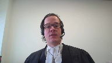
Thank you, Justices.
The Canadian Constitution Foundation asks this court to expressly reject Chief Justice Hinkson’s suggestion that an organization with a broad mandate may only have a weak interest in a subset of that mandate.
The suggestion that pursuing a specific issue concerning only a subset of the individuals represented or for which the rights may generally be advocated by that organization in no way demonstrates a weak interest.
The CCF has a long history of public advocacy on behalf of the constitutional rights of all Canadians.
That an organization like the CCF might choose to pursue a subset of that mandate or to shift focus doesn’t suggest a weak interest at all.
Public interest organizations must be flexible to meet the needs of the moment.
I suggest to you that the current environment we’ve gone through in the past two years demonstrates this to a T. Very few organizations would have been expected to be deeply concerned— deeply involved in pursuing advocacy around mobility rights.
Understandably now, an organization with broad mandates to pursue constitutional rights of all Canadians are naturally going to be interested in pursuing cases involving mobility rights.
There’s no weak interest there.
There’s no suggestion that— there should be no suggestion that they’re not genuinely interested in protecting the rights of Canadians.
They’re responding to the moment.
I’d like to now speak briefly about the public— the third branch of the inquiry.
The public interest standing inquiry should not devolve into a question of how or through whom facts will be proved.
The focus must be on the public interest standing inquiry.
The focus must be on is the particular public interest organization well-positioned to prove the claim as pleaded.
And that’s key there, as pleaded.
We’re not suggesting that claims that could not possibly be proven would survive, and of course they wouldn’t survive the first branch in any event.
But a demonstrated history of managing complex litigation must be a relevant factor.
It’s not fatal, it’s not essential, it’s not necessary, but surely it’s indicative.
Now, I appreciate the concession from the Attorney General of British Columbia that individual plaintiffs aren’t required.
They’re not advancing that argument, and that’s well stated.
A concern nonetheless continues to exist with the emphasis that may be placed on the availability of alternative litigants and what must be established to show that an individual plaintiff is not practical in the circumstances.
Justice Rowe (02:17:47): Yeah, but you gave the example of mobility.
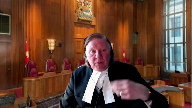
I mean, how difficult is it to find someone who said, I couldn’t travel to take up a job?
How difficult is it to find someone who said, I couldn’t visit my ill parent because of this?
I mean, this is not hard.
Speaker 24 (02:18:05): I think I’d respond in this way, though, that mobility is a relatively uncontentious right, but what’s significant is the current, I’d say, social, political, media climate, there’s a significant disincentive for individuals to stick their head out and pursue charter litigation.
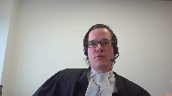
There’s just a massive potential for personal consequences.
And we submit that public interest organizations, while they should go out and look for co-plaintiffs that are individuals, that is appropriate, they should not be required to demonstrate an exhaustive search that it’s not possible that an individual co-plaintiff is out there in appropriate circumstances.
Where it can be explained, it should be acceptable.
And I know as a corollary to this, the current media climate also weighs on pro bono counsel, and acting on behalf of public interest organizations with a history of responsible advocacy provides pro bono counsel with a level of comfort to take on controversial cases.
That should not be understated.
I’d like to close by addressing, Justice Roe, your concern about stare decisis.
That’s an important concern.
I would observe, however, that it’s not obvious to me that the attorneys general share a sincere concern about preserving the rights of future litigants when they bring standing challenges to public interest organizations.
Justice Wagner (02:19:39): All right.
Thank you.
Thank you very much for reply for the respondent Michael Fetter.
Speaker 23 (02:19:47): Chief Justice, Justices, Council for the Attorney General of Canada says that Downtown Eastside stands for the proposition that a case with an individual plaintiff is preferable to one brought with public interest standing.
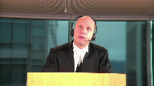
The statement my friend is referencing appears to be paragraph 37 of Justice Cromwell’s decision and she omits the qualifier found there.
A case with an individual plaintiff may be preferable if all of the other relevant considerations are equal and in my submission here the other relevant considerations aren’t even close to equal.
I’d add that if we’re going to say that public interest groups like CCD should be made to go looking for co-plaintiffs all the time and if at all possible sue with them, we don’t need public interest standing.
If all if all the people want is CCD’s money and organizational skills, they don’t need standing.
They can act behind the scenes.
We’re not accomplishing anything by setting up the public interest standing doctrine.
Council for the Attorney General of Ontario argues that it’s essential for the government to know the case it has to meet and that’s why clients like mine should be made to disclose the concrete factual setting in all its detail at the stage of a standing challenge before discovery.
The concern about knowing the case the defendant has to meet exists in every piece of litigation.
Litigation against private actors, non-constitutional litigation, we don’t need a standing analysis to address it.
We have ordinary tools of civil litigation to do so.
We certainly don’t need to require presentation of the plaintiff’s intended trial evidence at the inception of the case.
We have a system that rests on the bedrock principle that justice will best be achieved through a presentation of competing points of view following discovery and preparation of those competing points of view in private.
That’s why we have privilege.
Submissions by all of the attorneys general generally give no weight to that bedrock principle that lies at the core of our system of justice.
They give no weight to the fairness concerns that would arise if the claimant had to identify and describe its evidence at the start of every case with no corresponding obligation on the part of the government defendant.
I’d add that in this case the Attorney General of British Columbia had no apparent problem knowing the case it had to meet.
He filed an amended response to civil claim in response to CCD’s amended notice of civil claim and better still it wasn’t materially changed from what the Attorney General had filed in response to the original notice of civil claim when there were individuals suing as co-plaintiffs.
The Attorney General of Ontario also relies on McKay and Danson to emphasize the need for adjudicated facts in charter litigation.
I agree that adjudicated facts are needed in charter litigation but those are cases where the claimants insisted on presenting their cases in a factual vacuum.
In Danson the claimant actually disavowed any intention to call evidence at any time.
That is a far cry from this case.
My friend for the Attorney General of Saskatchewan as an intervener criticizes Miss Bernard’s evidence.
She characterizes Miss Bernard as advocating respect for the autonomy of persons with disabilities but not explaining why their litigation autonomy shouldn’t be respected.
That’s not a remotely accurate characterization of Miss Bernard’s evidence.
I’d refer you again to paragraphs 51 to 56 of that evidence where she deposes to the multiple barriers to litigating that that population faces.
The Attorney General of Saskatchewan submissions seem ultimately to center on a concern about interests of affected individuals being usurped or prejudiced by public interest groups for example because of stare decisis and I will echo the concern just expressed by council for the Canadian Constitution Foundation that it’s not clear that that is truly at the center of of what the Attorneys General are doing here
but but I will say that to the extent it’s a real concern this concern about prejudice it’s not unique to litigation brought by public interest groups.
There are thousands of individuals detained under the Mental Health Act every year but for the barriers they face any one of them could theoretically challenge the act challenge the scheme without proving any alignment of interest with any of the thousands of others or they could be aligned but challenge it very ineffectively very inefficiently they could waste court resources subject to case management and they could obtain a precedent that was bad for others.
We should not exaggerate the concern posed by public interest groups or pretend that any concern about setting bad precedents for others is unique to them it exists in all constitutional litigation.
Justice Wagner (02:25:07): I’m sorry, Mr. Whitten?
Speaker 24 (02:25:09): Thank you, Chief Justice.

I have five points in reply.
First, CCD submissions yesterday repeatedly attempt to reverse the onus on a standing application.
Justice Brown asked my friend if an intention to call witnesses was enough to satisfy its evidentiary burden.
My friend candidly said it’s not sufficient but, and then he went on, he said the AG didn’t write a letter, the AG didn’t seek to cross-examine Ms. Bernard, the AG didn’t prove that there was a better suited organization, and the AG didn’t seek particulars, although you can’t seek particulars of evidence in British Columbia.
That’s not permitted.
Everything that followed the but was an attempt to reverse the onus to the province.
But of course, it was CCD’s onus alone to prove that they were entitled to standing to litigate important charter rights of third parties.
The record shows that CCD had abundant notice of our objection to their unparticularized pleading, the complete lack of adjudicative facts, and CCD’s only response at the summary trial was to state its intention to call witnesses, which simply failed to discharge its burden.
And in my respectful submission, this court should not hollow out its standing test to accommodate CCD’s failure to adequately respond to a standing challenge.
Its attempt to invoke the respondent’s veto.
Second, I wish to respond to CCD’s reliance on the fact that they have counsel at a large national law firm.
In my submission, this argument is tantamount to advocating for a relaxed standing test for counsel at large firms.
We say this cannot be.
Counsel at large national law firms face the same tests and evidentiary onus as everyone else.
It was not the late Joe Arvey’s presence in downtown Eastside that demonstrated a sufficiently concrete factual setting.
It was Joe Arvey’s evidence that assuaged the policy concerns that inevitably arise when there is no individual plaintiff before the court.
Evidence proving that individuals were unwilling to act as plaintiff.
Evidence proving that SWAP acted in a representative capacity.
And evidence proving that they had committed witnesses to contextualize the issues.
These are findings the chambers judge in this case did not and could not make on the record before him.
Third, in response to my friend’s submission that the parallel charter claim is irrelevant.
We say it has bearing on the analysis in multiple ways.
It shows that there are individuals willing to act as plaintiffs, which is an important consideration at the third step.
It significantly undermines concerns about immunization of the impugned law from judicial review, which was described by this court as the whole purpose of granting public interest standing.
And it also undermines access to justice concerns as it would waste judicial resources to have two constitutional challenges to the same provisions moving through the B.C. courts.
Justice Jamal (02:27:55): The province is opposing certification in the class action.
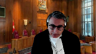
It sounds passing strange to say the class action is a better vehicle, but we suggest it should be denied certification.
And shouldn’t we go forward?
I don’t have conduct of that litigation, Justice Jamal.
There’s a pleading-
Well, you’re the province.
You’re the province.
So whether it’s you or your colleague, that’s the position the province is taking.
Speaker 24 (02:28:19): and in my submission the fact that that is pleaded does not preclude later consenting, amending that litigation.

It’s in court in two weeks to set some timelines to sort some issues out.
Fourth, I’d like to respond to CCD’s point that challenges to standing exhaust resources and discourage public interest litigation.
In my submission respondents must be able to challenge standing in appropriate cases.
This was not a strategic attempt by the AG to prolong this litigation.
It was to raise significant issues of importance to the litigation process.
So significant that the Chief Justice of the BC Supreme Court, a trial judge with extensive experience with constitutional challenges, denied CC standing.
And so CCD’s remarks about a five-year odyssey have to be put in context.
The first two years of litigation no steps were taken to move the claim forward.
We had to write to council to ask if they intended to pursue their claim.
Judgment was also reserved at the Court of Appeal for almost a year and a half.
I’d like to deal very quickly with the respondents request for special costs.
In our submission they simply cannot meet the test.
It’s reserved for watershed significant litigation with a widespread societal impact.
Standing is a preliminary interlocutory issue.
It’s a common one with an established test.
And very last, I wish to respond briefly to the Empowerment Council’s comment that where a remedy sought by a public interest litigate promotes autonomy, the court can be less concerned about alignment of interest.
And in this regard I would commend to you the helpful paper by former Chief Justice McLaughlin at tab 25 of our Convention Book where she explains the complexity of the autonomy issues that arise for involuntary treatment.
She explains the cruel paradox that where patients whose illnesses prevent insight into their need for treatment, refuse treatment, that exercise of formal autonomy can undermine severely their substantive autonomy.
And she says it can render them to be sentenced to languish in a mental health facility because without treatment they can’t get well to regain their autonomy.
And that is why the BC Mental Health Organizations, the Schizophrenia Society, the Mood Disorder Society have intervened in past challenges along with directly affected individuals to support the BC Mental Health Act.
Thank you for the indulgence of the extra seconds.
Those are my submissions.
Thank you very much.
Justice Kasirer (02:30:34): Chief Justice, would you allow me to ask a quick question?
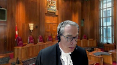
You didn’t answer the argument that your colleague made on section 45 of the Supreme Court Act, which may or may not give us the authority to deal with what you say needs a cross appeal.
And I’m wondering your position on that, mindful of the fact that the Attorney General knew in the courts below that this was the end game of the respondent, that is to say, to have standing, and that you had the opportunity to plead in writing and at this hearing, the main point against the outcome, the parallel class action.
You may not have given a full answer to my colleague Justice Duhamel, but you at least had an opportunity to plead it.
And you’ve complained from the first moment of your pleading about wasted judicial resources being an issue here.
Sending it back, at least from a distance, looks like it would aggravate that problem.
What’s your position on section 45?
Speaker 24 (02:31:44): So if I can say a few things.
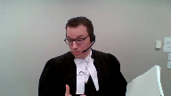
First, I’ve read Section 45, I’ve read the cases.
There’s no question that this court has varied Court of Appeal orders in the past.
So the jurisdictional question is a simple one.
The more important question, and this is canvassed by Justice Binney in the Shell Canada case, is this court says if a litigant seeks to vary the Court of Appeal’s order, it’s incumbent on them to bring a cross appeal.
And so we were of course surprised when this became a live issue in the Respondent’s Factum.
We did not understand that to be part of the playing field.
I take your Lordship’s point about, yes, we’re arguing about standing, we’ve been arguing about standing the whole time, but we didn’t have an opportunity to respond to that.
To talk about the utility of perhaps, we of course say the appeal should be allowed, but if it were to go back to the BC Supreme Court to allow them to consider the use of judicial resources, by the time this court renders its decision, there may be a certified class action moving towards trial, a common issues trial, to test the validity of these same provisions.
And so the trial court should of course be able to take that into account in assessing standing.
So in terms of does the court have jurisdiction?
Yes, it has varied Court of Appeal’s orders, but in the ordinary course, as my friend is well aware, that requires a cross appeal, right?
Justice Wagner (02:33:03): Thank you very much.
So I’d like to thank all the attorneys for their submissions.
Justice Wagner (02:33:10): The court will take the case under advisement and the court is adjourned until tomorrow morning.
Thank you.